<!doctype html>
<html lang="en">
<head>
  <meta charset="utf-8">
  <meta name="viewport" content="width=device-width, initial-scale=1">
  <title>arxiv digest — 2026-08-28</title>
  <style>
:root {
  --bg: #ffffff;
  --fg: #1f2328;
  --muted: #59636e;
  --border: #d0d7de;
  --card: #f6f8fa;
  --link: #0969da;
}
body {
  max-width: 980px;
  margin: 0 auto;
  padding: 2rem 1rem 5rem;
  font-family: -apple-system, BlinkMacSystemFont, "Segoe UI", Helvetica, Arial, sans-serif;
  line-height: 1.55;
  color: var(--fg);
  background: var(--bg);
}
a { color: var(--link); }
img { max-width: 100%; height: auto; }
pre, code { background: var(--card); border-radius: 6px; }
pre { padding: 1rem; overflow-x: auto; }
blockquote { border-left: 4px solid var(--border); padding-left: 1rem; color: var(--muted); }
details { margin: 0.6rem 0; }
summary { cursor: pointer; font-weight: 600; }
.paper-figures-scroll {
  display: flex;
  gap: 1rem;
  overflow-x: auto;
  overscroll-behavior-x: contain;
  padding: 0.75rem 0.25rem 1rem;
  margin: 1rem 0 1.25rem;
  border-top: 1px solid var(--border);
  border-bottom: 1px solid var(--border);
  scroll-snap-type: x proximity;
}
.paper-figure-card {
  flex: 0 0 min(260px, 72vw);
  scroll-snap-align: start;
  background: var(--card);
  border: 1px solid var(--border);
  border-radius: 12px;
  padding: 0.55rem;
}
.paper-figure-card img {
  display: block;
  width: 100%;
  max-height: 240px;
  object-fit: contain;
  background: white;
  border-radius: 8px;
}
.paper-figure-caption {
  display: block;
  margin-top: 0.5rem;
  color: var(--muted);
  font-size: 0.85rem;
}
.figure-strip-hint {
  color: var(--muted);
  font-size: 0.9rem;
  margin-bottom: -0.3rem;
}
</style>
  <!-- MathJax: renders $...$ inline math and $$...$$ display math, plus
       \(...\) and \[...\]. Loaded from the official CDN; works offline
       once cached. Configured to skip code/pre blocks so arxiv IDs that
       look like dollar amounts don't get mangled. -->
  <script>
    window.MathJax = {
      tex: {
        inlineMath: [['$', '$'], ['\\(', '\\)']],
        displayMath: [['$$', '$$'], ['\\[', '\\]']],
        processEscapes: true,
        processEnvironments: true
      },
      options: {
        skipHtmlTags: ['script', 'noscript', 'style', 'textarea', 'pre', 'code'],
        ignoreHtmlClass: 'tex2jax_ignore',
        processHtmlClass: 'tex2jax_process'
      }
    };
  </script>
  <script id="MathJax-script" async
    src="https://cdn.jsdelivr.net/npm/mathjax@3/es5/tex-chtml.js"></script>
</head>
<body>
<header style="background-color: #333; color: white; padding: 15px; margin-bottom: 20px;">
  <h1 style="margin: 0; font-size: 24px;">
    <a href="https://ochelpan.github.io/arXiv_clean/" style="color: white; text-decoration: none;">Main</a>
  </h1>
</header>

<h1>Daily arXiv Report</h1>

<hr>
<p>
<a href="index.html">← Index</a>
 · <a href="papers_04.html">← Previous</a> · <a href="papers_06.html">Next →</a>
</p>
<hr>

<h2>Papers 81–100</h2>
<p><a id="paper-2608.25545"></a></p>
<h3 id="certified-decoding-of-quantum-ldpc-codes"><a href="http://arxiv.org/abs/2608.25545v1">Certified decoding of quantum LDPC codes</a></h3>
<p><strong>Authors:</strong> Ragavi Krishnamoorthy, Florian Gerhardt, Johannes Knaute, Thomas Klir, Stefan Raimund Maschek, Erik Schulze, Tomislav Maras, Alexander Dotterweich, Loong Kuan Lee, Christian Bauckhage, Nico Piatkowski<br>
<strong>Type:</strong> theory · <strong>Category:</strong> quantum information and computing · <strong>PDF:</strong> <a href="https://arxiv.org/pdf/2608.25545v1">https://arxiv.org/pdf/2608.25545v1</a><br>
<strong>Analysis basis:</strong> full PDF text, analyzed in chunks</p>
<div class="figure-strip-hint">↔ Scroll figures horizontally</div>
<div class="paper-figures-scroll">
<figure class="paper-figure-card">
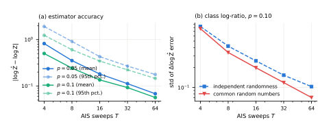
<figcaption class="paper-figure-caption"><b>Fig 1.</b> Figure 1: Estimator validation on the rotated surface code d = 5 against exact coset sums (200 syndromes per point, K = 128 chains). (a) Absolute error of log ˆZλ versus the number of AIS sweeps T: the error decays as roughly T −1 and is ≈0.1 nats at T = 32. (b) Standard deviation of the error of the class log-ratio log ˆZ0 −log ˆZ1: common random numbers dominate in- dependent randomness uniformly in T (variance reduc- tion 1.2×–2.2×, growing with T).</figcaption>
</figure>
<figure class="paper-figure-card">
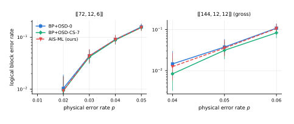
<figcaption class="paper-figure-caption"><b>Fig 2.</b> Figure 3: Block logical error rates on the bivariate bi- cycle codes (Wilson 95% intervals; zero-failure points at p = 0.01 omitted from the log axis, see Table 1). On [[72, 12, 6]] the three decoders are statistically in- distinguishable; on the gross code BP+OSD-CS-7 re- tains an edge over both BP+OSD-0 and the (candidate- restricted) AIS decoder.</figcaption>
</figure>
<figure class="paper-figure-card">
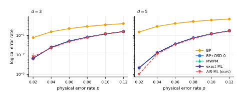
<figcaption class="paper-figure-caption"><b>Fig 3.</b> Figure 2: Logical error rate versus physical bit-flip rate on rotated surface codes (d = 3 left, d = 5 right; Wilson 95% intervals). The BP+OSD-0, MWPM, and exact- ML curves coincide to within statistical resolution at these distances; the AIS decoder (dashed) reproduces the decisions of the exact degenerate ML decoder al- most perfectly (see text). Plain BP fails at all rates, as expected from the degenerate posterior of Section 6.</figcaption>
</figure>
</div>
<p><strong>Summary.</strong> This work tackles the difficult problem of decoding quantum LDPC codes by reformulating it as estimating partition functions within a Markov Random Field model. The authors introduce novel, certified decoders that surpass existing heuristic methods by providing mathematical guarantees of optimality for most decisions. This advances the practical feasibility of fault-tolerant quantum computation by improving error correction decoding.</p>
<p><strong>Why it may be interesting.</strong> The rigorous mathematical framework for handling error degeneracy in quantum codes, especially the development of certified decoding methods, provides tools applicable to understanding the limits of fault-tolerant quantum computation.</p>
<details>
<summary>Detailed structure</summary>
<p><strong>Main problem.</strong> The primary challenge is decoding quantum Low-Density Parity-Check (qLDPC) codes, which is significantly harder than classical decoding because errors are equivalent up to stabilizers, requiring the comparison of entire error class probabilities (partition functions).</p>
<p><strong>Main result.</strong> The authors developed a certified sampling decoder that matches or exceeds existing decoders while providing formal certificates of optimality for the majority of syndrome decisions.</p>
<p><strong>Method.</strong> The problem is reframed as probabilistic inference in an undirected graphical model (Markov Random Field) over the code's check variables, allowing for the estimation of class partition functions using techniques like Annealed Importance Sampling (AIS) and Bethe free energy approximations.</p>
<p><strong>Model / system.</strong> The system is quantum error correction using qLDPC codes, which are treated as an MRF. The framework generalizes concepts from the surface code to arbitrary CSS codes and spacetime decoding.</p>
<p><strong>Key observables.</strong> Logical error rates, certified fractions of correct decisions, and the comparison of decoding performance against heuristic decoders like BP+OSD.</p>
<p><strong>Important parameters / regimes.</strong> Code structure (e.g., [[72, 12, 6]]), noise models (depolarizing, circuit-level), and the computational cost (e.g., millisecond decoding time).</p>
<p><strong>Assumptions / limitations.</strong> The core assumption is that the problem can be mapped to an MRF partition function estimation, and the Bethe decoder's bias cancels out when comparing different error classes.</p>
<p><strong>Paper structure.</strong> The paper introduces the difficulty of degenerate quantum decoding, proposes the MRF framework for partition function estimation, details two main decoders (certified sampling and region-based), and validates them across various codes and noise models, concluding with hardware implementation results.</p>
</details>
<details>
<summary>Abstract</summary>
<p>Quantum low-density parity-check (qLDPC) codes reduce the qubit overhead of fault-tolerant quantum computation by an order of magnitude, but their decoding is harder than its classical counterpart: because many physical errors are equivalent up to stabilizers, the degenerate maximum-likelihood (ML) decoder must compare the probabilities of entire equivalence classes of errors, that is, partition functions, rather than single errors. The workhorse decoder BP+OSD sidesteps degeneracy heuristically and offers no guarantees. We treat degenerate decoding as probabilistic inference in an undirected graphical model: the probability of each logical class is the partition function of an unconstrained, strictly positive Markov random field over the code's check variables, a construction that generalizes the random-bond Ising mapping of the surface code to arbitrary CSS codes and to spacetime decoding with measurement errors and circuit-level noise. On this model we build two decoders. The first estimates all class partition functions by annealed importance sampling with common random numbers and attaches to every decision a certificate of optimality: a paired bootstrap test, or, composed with constant-factor estimators such as WISH, an exact optimality proof. The second is region-based: the Bethe free energy, whose bias cancels between classes, reproduces exact ML decoding on every tested surface-code instance at millisecond cost, and enlarging the regions to elimination clusters makes exact degenerate ML decoding of the [[72,12,6]] bivariate bicycle code feasible. Across surface codes and the bivariate bicycle codes [[72,12,6]] and [[144,12,12]], under code-capacity, phenomenological, and circuit-level noise, the sampling decoder matches or exceeds BP+OSD while certifying the bulk of its decisions, and the certificate flags exactly the syndromes on which any fast decoder should be distrusted.</p>
</details>
<p><sub><a href="#top">↑ back to top</a></sub></p>

<p><a id="paper-2608.25136"></a></p>
<h3 id="generalized-efficient-quantum-circuit-implementation-of-discrete-time-quantum-walks-on-cayley-graphs"><a href="http://arxiv.org/abs/2608.25136v1">Generalized Efficient Quantum Circuit Implementation of Discrete-Time Quantum Walks on Cayley Graphs</a></h3>
<p><strong>Authors:</strong> Seoyoon Kang<br>
<strong>Type:</strong> theory · <strong>Category:</strong> quantum information and computing · <strong>PDF:</strong> <a href="https://arxiv.org/pdf/2608.25136v1">https://arxiv.org/pdf/2608.25136v1</a><br>
<strong>Analysis basis:</strong> full PDF text, analyzed in chunks</p>
<div class="figure-strip-hint">↔ Scroll figures horizontally</div>
<div class="paper-figures-scroll">
<figure class="paper-figure-card">
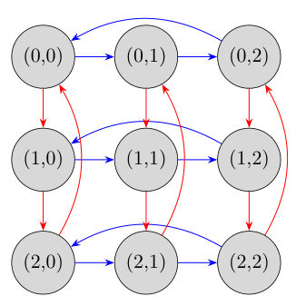
<figcaption class="paper-figure-caption"><b>Fig 1.</b> Figure 1: Examples of different types of Cayley graphs. (a) An undirected regular graph with an involution at σ = 3. Each edge is color-coded according to its corresponding generator in the generating set. (b) A directed torus grid graph with each cyclic group and its generator edges color-coded accordingly.</figcaption>
</figure>
<figure class="paper-figure-card">
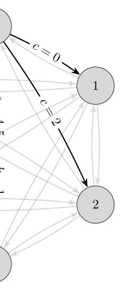
<figcaption class="paper-figure-caption"><b>Fig 2.</b> Figure 2: Graphical representation of the DTQW setup on an N-node Cayley graph with k generators. Each node represents a position state |x⟩in the Hilbert space H(N) p . The directed edges originating from node 0 illustrate the conditional shifts to neighboring nodes, where each transition is governed by a specific coin state |c⟩from the k-dimensional coin space H(k) c .</figcaption>
</figure>
<figure class="paper-figure-card">
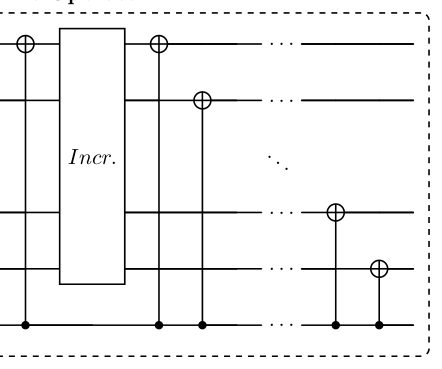
<figcaption class="paper-figure-caption"><b>Fig 3.</b> Figure 4: Quantum circuit implementation of a single-step discrete-time quantum walk (DTQW) using the decomposed shift operator. The shift operator is realized through a sequence of controlled-NOT operations acting on the position register, with the control provided by the coin register, and an increment operator independent of the coin state. The coin operator is applied prior to the conditional shift, completing one time step of the walk.</figcaption>
</figure>
<figure class="paper-figure-card">
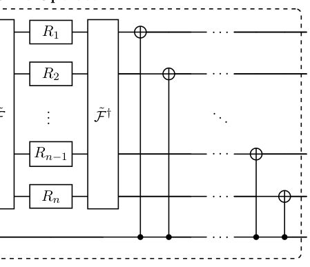
<figcaption class="paper-figure-caption"><b>Fig 4.</b> Figure 5: Final quantum circuit implementation of a single-step DTQW in the stepwise QFT scheme [20], showing the decomposition of the increment operator using QFT, phase rotations Rλ, and the IQFT.</figcaption>
</figure>
<figure class="paper-figure-card">
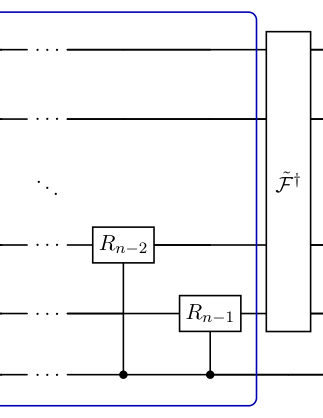
<figcaption class="paper-figure-caption"><b>Fig 5.</b> Figure 6: Quantum circuit implementation of DTQW in the boundary QFT scheme [21]. The QFT and its inverse are implemented only once at the start and the end excluding the SWAP operation. The central block corresponds to the single time step and is to be repeated t times.</figcaption>
</figure>
</div>
<p><strong>Summary.</strong> This paper presents a generalized, efficient quantum circuit framework for simulating discrete-time quantum walks on arbitrary Cayley graphs. By systematically decomposing the complex shift operator using a multi-stage factorization technique, the authors achieve substantial reductions in required CNOT gates compared to standard methods. This provides a crucial, hardware-conscious tool for realizing quantum walk simulations on near-term quantum hardware.</p>
<p><strong>Why it may be interesting.</strong> This work directly tackles the resource estimation for implementing quantum walks, which are fundamental models for quantum search and simulation, making it highly relevant for quantum algorithm development.</p>
<details>
<summary>Detailed structure</summary>
<p><strong>Main problem.</strong> The paper addresses the challenge of developing a generalized and efficient quantum circuit framework for implementing discrete-time quantum walks (DTQWs) on Cayley graphs of arbitrary dimension.</p>
<p><strong>Main result.</strong> The proposed multi-stage decomposition of the shift operator significantly reduces the upper-bound CNOT cost compared to naive implementations, providing a scalable pathway for near-term quantum devices.</p>
<p><strong>Method.</strong> The authors build upon the Boundary QFT scheme by introducing a systematic, hierarchical multi-stage decomposition of the shift operator, which factorizes the QFT-diagonalized operator into structured block components.</p>
<p><strong>Model / system.</strong> The model is the Discrete-Time Quantum Walk (DTQW) evolving on a Cayley graph $\Gamma(G, S)$. The evolution is governed by $U = S(C \otimes I_p)$, where $S$ is the shift operator, which is the primary computational bottleneck.</p>
<p><strong>Key observables.</strong> Upper-bound CNOT cost, gate complexity, and the reduction factor compared to naive implementations.</p>
<p><strong>Important parameters / regimes.</strong> The degree of the generating set ($k$) is identified as the dominant resource parameter, with efficiency gains shown for $k \le 64$ (inverse-closed) and $k \le 16$ (non-inverse-closed).</p>
<p><strong>Assumptions / limitations.</strong> The analysis relies on the linear CNOT scaling established by Rosa et al. and assumes the efficiency gain is largely insensitive to the system size $N$.</p>
<p><strong>Figures summary.</strong> The figures illustrate examples of different Cayley graphs and provide a graphical representation of the DTQW setup, including specific optimized quantum circuits for 2D torus graphs.</p>
<p><strong>Paper structure.</strong> The paper first establishes the DTQW model and the role of the shift operator. It then details the systematic multi-stage decomposition, generalizing the Boundary QFT scheme. The core of the work involves applying this decomposition to specific graph examples (1D and 2D torus graphs) and performing gate complexity analysis to demonstrate the efficiency gains.</p>
</details>
<details>
<summary>Abstract</summary>
<p>We present a generalized and efficient quantum circuit framework for implementing discrete-time quantum walks (DTQWs) on Cayley graphs of arbitrary dimension. Building on the Boundary QFT scheme of Razzoli et al., we introduce a systematic multi-stage decomposition of the shift operator for 1D Cayley graphs across three classes of generating sets: inverse-closed without involutions, inverse-closed with an involution, and non-inverse-closed. The decomposition hierarchically factorizes the QFT-diagonalized shift operator into structured block components, progressively reducing the control degree of the required rotation gates and replacing high-degree multi-qubit controlled operations with collections of lower-degree equivalents. We extend this construction to $d$-dimensional torus graphs and provide explicit circuit implementations for an 8-Cayley graph and a $\mathbb{Z}_{16} \times \mathbb{Z}_8$ torus graph as concrete illustrations. Gate complexity analysis using the linear CNOT scaling of Rosa et al. demonstrates that the decomposed implementation achieves a substantial reduction in upper-bound CNOT cost relative to the naive implementation within the regime $k \leq 64$ for inverse-closed graphs and $k \leq 16$ for non-inverse-closed graphs, where $k$ denotes the degree of the generating set. Benchmarking further reveals that this efficiency gain is largely insensitive to the system size $N$, identifying $k$ as the dominant resource parameter for the shift operator. These results provide a scalable and hardware-conscious pathway toward practical DTQW implementations on near-term quantum devices.</p>
</details>
<p><sub><a href="#top">↑ back to top</a></sub></p>

<p><a id="paper-2608.25852"></a></p>
<h3 id="light-hole-spin-qubits-in-strained-sige-lattice-matched-to-ge"><a href="http://arxiv.org/abs/2608.25852v1">Light-Hole Spin Qubits in Strained SiGe Lattice-Matched to Ge</a></h3>
<p><strong>Authors:</strong> Edmondo Valvo, Davide Costa, Patrick Del Vecchio, Stefano Bosco, Giordano Scappucci, Maximilian Rimbach-Russ<br>
<strong>Type:</strong> theory · <strong>Category:</strong> quantum information and computing · <strong>PDF:</strong> <a href="https://arxiv.org/pdf/2608.25852v1">https://arxiv.org/pdf/2608.25852v1</a><br>
<strong>Analysis basis:</strong> full PDF text, analyzed in chunks</p>
<div class="figure-strip-hint">↔ Scroll figures horizontally</div>
<div class="paper-figures-scroll">
<figure class="paper-figure-card">
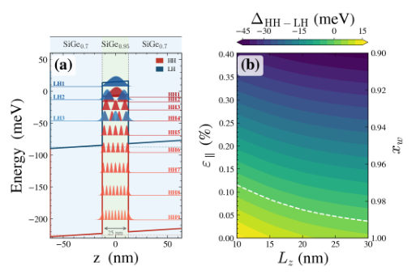
<figcaption class="paper-figure-caption"><b>Fig 1.</b> FIG. 1. We study a heterostructure lattice matched to bulk Ge comprising stacked Si1−xGex layers of different com- position leading to a tensile-strained quantum well. We show in (a) an exemplary parameter choice with a relaxed Ge buffer at the left-most edge and then an alternation of Si0.30Ge0.70/Si0.05Ge0.95/Si0.30Ge0.70. In (b) a map of the energy gap between HH ground state and LH ground state as a function of well thickness and Ge concentration in the SiGe well. The dashed white line represents the transition line where the HH-LH gap closes. The strain ε∥is computed from the linear Vegard interpolation of the lattice constant of the Si1−xwGexw well.</figcaption>
</figure>
<figure class="paper-figure-card">
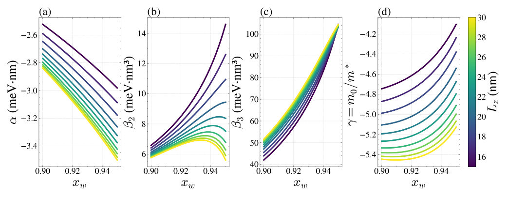
<figcaption class="paper-figure-caption"><b>Fig 2.</b> FIG. 2. Subband parameters as a function of Germanium concentration (xw) in the SiGe well and well thickness. (a) linear Rashba coefficient α, (b) cubic Rashba coefficient β2 proportional to k3 + in the folded Hamiltonian, (c) cubic Rashba coefficient β3 proportional to k−k+k−in the folded Hamiltonian and finally the effective mass of the lowest subband in (d). All four figures were extracted for a vertical field of 1 MV/m and barrier composition Si0.3Ge0.7</figcaption>
</figure>
<figure class="paper-figure-card">
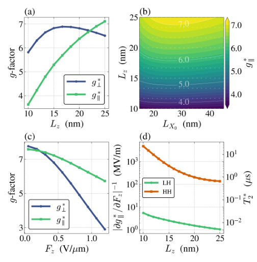
<figcaption class="paper-figure-caption"><b>Fig 3.</b> FIG. 3. Simulated g-factors in the growth direction (g∗ ⊥) and purely in plane along the x direction (g∗ ∥) at an electric field Fz = 0.5 MV/m for (a) a sweep of the Si0.05Ge95 well thickness (Lz) with fixed planar confinement at 35 nm, (b) isotropic planar confinement LX0 and well thickness and (c) out-of-plane linear electric field Fz for Lz = 25 nm and LX0 = 35 nm. The barrier composition is set to Si0.30Ge0.70. (d) The inverse of the derivative of the in-plane g-factor with re- spect to the vertical electric field (and corresponding dephas- ing time) is computed as a function of well thickness for the proposed tensile strained heterostructure with Si0.05Ge95 well and a typical ε-Ge...</figcaption>
</figure>
<figure class="paper-figure-card">
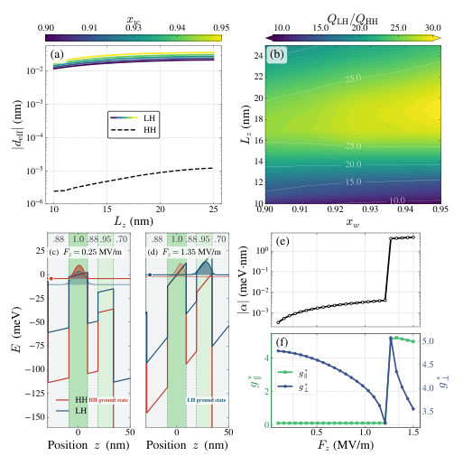
<figcaption class="paper-figure-caption"><b>Fig 4.</b> FIG. 4. (a) Computed dipole moment as the transition matrix element of the position operator between the two computa- tional states d = ⟨0| x |1⟩, expressed in nm, for a planar con- finement LX0 = 35 nm, barrier composition Si70Ge30, vertical electric field Fz = 1.2 MV/m and magnetic field amplitude 15 mT. Overlayed in black is the dipole moment of the ε-Ge HH heterostructure utilized for comparison. (b) Ratio of Quality factors Q = T ∗ 2 deffeEAC/ℏfor a Light-Hole ground state in the tensile strained SiGe well (QLH) and a ε-Ge HH hole spin qubit (QHH) computed for fluctuations around a vertical field of 1.2 MV/m. (c)-(d) Proposed heterostructure to achieve a HH-LH bilayer for 0.25 MV/m and...</figcaption>
</figure>
<figure class="paper-figure-card">
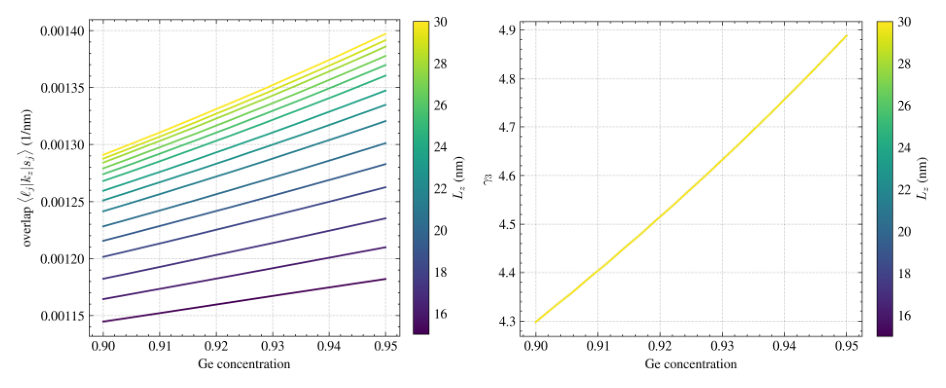
<figcaption class="paper-figure-caption"><b>Fig 5.</b> FIG. 5. (a) Light-Hole/Split-Off overlap as a function of the Ge concentration in the well and well thickness. (b) Luttinger parameter γ3. We plot these quantities as a function of Ge concentration in the well and well thickness. These quantities were extracted for a vertical field of 1 MV/m.</figcaption>
</figure>
</div>
<p><strong>Summary.</strong> This theoretical work proposes using tensile-strained SiGe/Ge heterostructures to create light-hole (LH) spin qubits, overcoming limitations found in conventional heavy-hole (HH) qubits. By engineering the lattice structure, the authors achieve a significantly more isotropic spin response and a substantial increase in the qubit's quality factor. The model also demonstrates the feasibility of electrically switching between HH and LH ground states.</p>
<p><strong>Why it may be interesting.</strong> The detailed theoretical modeling of spin-orbit coupling and g-tensor renormalization in semiconductor heterostructures is highly relevant for designing solid-state qubits, providing concrete material parameters for quantum device engineering.</p>
<details>
<summary>Detailed structure</summary>
<p><strong>Main problem.</strong> The paper addresses the need for advanced hole-based spin qubits with improved coherence and reduced spin anisotropy compared to established heavy-hole (HH) platforms.</p>
<p><strong>Main result.</strong> The proposed tensile-strained Light-Hole (LH) heterostructure lattice-matched to Ge successfully stabilizes an LH ground state exhibiting large spin-orbit coupling and an order-of-magnitude improvement in the quality factor.</p>
<p><strong>Method.</strong> The study employs theoretical calculations involving the numerical diagonalization of a 6-band k.p Hamiltonian and projecting the resulting Hamiltonian to analyze spin properties.</p>
<p><strong>Model / system.</strong> The physical system is a quantum well/barrier structure made of tensile-strained SiGe/Ge, designed to confine holes in a light-hole (LH) ground state. The model uses a k.p Hamiltonian incorporating linear and cubic spin-orbit coupling terms.</p>
<p><strong>Key observables.</strong> Spin-orbit coupling parameters ($\alpha, eta_2, eta_3$), g-tensor components ($g^*_{\parallel}, g^*_{\perp}$), dipole moment, and Quality factor ($Q$).</p>
<p><strong>Important parameters / regimes.</strong> Well thickness ($L_z$), Ge concentration ($x_w$), and applied electric field ($F_z$).</p>
<p><strong>Assumptions / limitations.</strong> The analysis assumes the system remains structurally stable against strain relaxation, and calculations are performed by projecting the full Hamiltonian onto the LH ground state doublet.</p>
<p><strong>Figures summary.</strong> Figures illustrate the energy gap closure between HH and LH states, the dependence of SOC parameters and effective mass on composition/thickness, and the tunability of the g-tensor components with applied electric fields.</p>
<p><strong>Paper structure.</strong> The paper systematically compares the proposed LH platform against traditional HH platforms, deriving the effective Hamiltonian, calculating key spin parameters (SOC, g-tensor), and demonstrating the advantages in coherence and tunability, culminating in the proposal of a switching bilayer structure.</p>
</details>
<details>
<summary>Abstract</summary>
<p>Strained germanium ($\varepsilon$-Ge) quantum wells on metamorphic SiGe buffers have enabled advanced hole-based spin qubit devices. Alternatively, unstrained Ge with lattice-matched strained silicon-germanium ($\varepsilon$-SiGe) barriers eliminates the need for metamorphic buffers altogether. The ground state character of both these platforms is predominantly heavy-hole (HH) with a largely anisotropic spin response. We propose and study an alternative heterostructure, lattice-matched to Ge, in which both the SiGe quantum well and barriers are tensile strained, with their composition contrast providing the band offset for confinement and the tensile strain stabilizing a light-hole (LH) ground state. We show large spin-orbit coupling (SOC), both linear and cubic, along with a significantly more isotropic spin response compared to strained HH qubits. We also study the decoherence properties of the proposed device, showing an appreciable gain in the quality factor compared to their HH counterparts. Finally, we propose a bilayer heterostructure that allows for electrical switching between HH and LH ground state character.</p>
</details>
<p><sub><a href="#top">↑ back to top</a></sub></p>

<p><a id="paper-2608.25778"></a></p>
<h3 id="quasi-two-dimensional-magnetic-structure-of-the-triclinic-double-perovskite-camath730mathcuwomath731math"><a href="http://arxiv.org/abs/2608.25778v1">Quasi two dimensional magnetic structure of the triclinic double perovskite Ca$_2$CuWO$_6$</a></h3>
<p><strong>Authors:</strong> Bangye Qin, Dmitry D. Khalyavin, Xuan Liang, Kazunari Yamaura, Alexei A. Belik, Roger D. Johnson<br>
<strong>Type:</strong> both · <strong>Category:</strong> strongly correlated electrons · <strong>PDF:</strong> <a href="https://arxiv.org/pdf/2608.25778v1">https://arxiv.org/pdf/2608.25778v1</a><br>
<strong>Analysis basis:</strong> full PDF text, analyzed in chunks</p>
<div class="figure-strip-hint">↔ Scroll figures horizontally</div>
<div class="paper-figures-scroll">
<figure class="paper-figure-card">
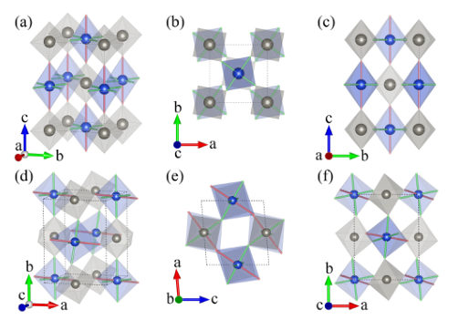
<figcaption class="paper-figure-caption"><b>Fig 1.</b> FIG. 1. Comparison of the crystal structures and co-operative Jahn–Teller distortions of Sr2CuWO6 and Ca2CuWO6, shown in panes (a)-(c) and (d)-(f), respectively (note relative origin shift). The elongated Cu-O bonds shown in red are parallel to the tetragonal c axis in Sr2CuWO6 and to [¯101] in the native P¯1 setting of Ca2CuWO6, which follows Ref. [12] in which b is the largest unit cell parameter. W and Cu atoms are shown in gray and blue, respectively meanwhile Sr and Ca atoms are omitted for clarity.</figcaption>
</figure>
<figure class="paper-figure-card">
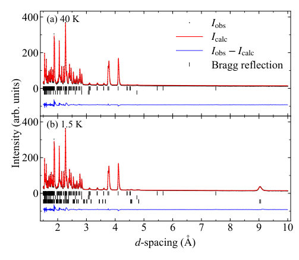
<figcaption class="paper-figure-caption"><b>Fig 2.</b> FIG. 2. Neutron powder diffraction data for Ca2CuWO6 collected in (a) the paramagnetic phase and (b) the antiferro- magnetic phase. A representative pattern from the detector bank centred at 58.330◦is shown. Black points denote the observed intensities, the red curves are the calculated pro- files, and the blue curves are the observed-minus-calculated differences, offset vertically for clarity. In (a), the tick marks indicate, from top to bottom, Ca2CuWO6 and CaWO4 im- purity nuclear Bragg positions, respectively. In (b), the ad- ditional row indicates magnetic Ca2CuWO6 reflections. The magnetic reflection near d ≃9.0 Å is indexed as ( 1</figcaption>
</figure>
<figure class="paper-figure-card">
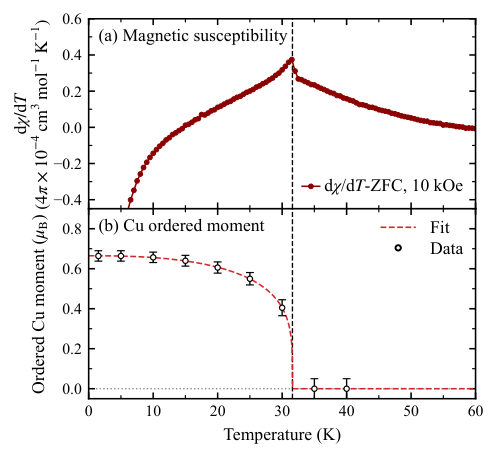
<figcaption class="paper-figure-caption"><b>Fig 3.</b> FIG. 3. (a) Low-temperature dependence of the mag- netic susceptibility for Ca2CuWO6 measured under zero-field- cooled (ZFC) conditions, shown here in SI units as the first derivative with respect to temperature to clearly identify the magnetic phase transition at TN ≃32 K. (b) Temperature dependence of the ordered Cu moment per Cu site obtained from Rietveld refinements against NPD data. The dashed curve is the phenomenological fit described in the main text. The vertical dashed lines in both panels indicate the magnetic phase transition at TN.</figcaption>
</figure>
<figure class="paper-figure-card">
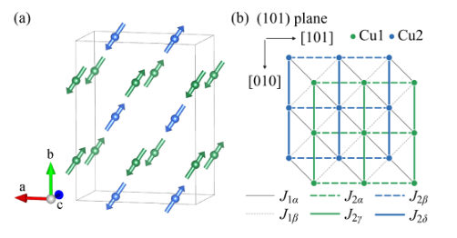
<figcaption class="paper-figure-caption"><b>Fig 4.</b> FIG. 4. (a) The collinear magnetic structure of Ca2CuWO6 at 1.5 K, described by the propagation vector k = ( 1</figcaption>
</figure>
<figure class="paper-figure-card">
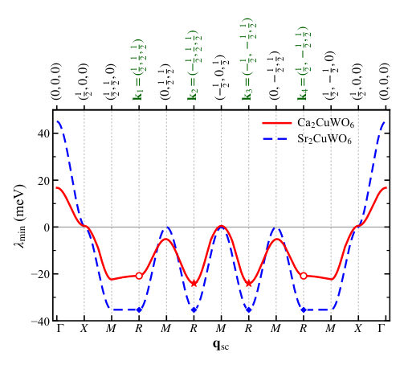
<figcaption class="paper-figure-caption"><b>Fig 5.</b> FIG. 5. Lowest energy mean-field eigenvalue, λmin, for Ca2CuWO6 (red solid line) and Sr2CuWO6 (blue dashed line) plotted along a selected path in the first Brillouin zone of the pseudo-cubic supercell, as defined at the top of the figure. The four R points correspond to the k-domains (see Table II) with k1,4 indicated by open circles and k2,3 by closed stars. We note that the nearly degenerate line of wavevectors ap- pearing close to k1 and k4 in this plot result from the very weak, out-of-plane interactions J3 and J4 that involve doubly occupied d3z2−r2 Cu orbitals.</figcaption>
</figure>
</div>
<p><strong>Summary.</strong> This research determines the antiferromagnetic ground state of the triclinic double perovskite Ca2CuWO6 using neutron diffraction. By comparing it to the tetragonal analogue, Sr2CuWO6, the authors show that the structural symmetry lowering selects a single, common magnetic ordering vector. This highlights how subtle symmetry changes can dictate the precise magnetic ground state in strongly correlated oxides.</p>
<p><strong>Why it may be interesting.</strong> The work provides a detailed case study of how crystal symmetry breaking (tetragonal to triclinic) can select a specific ground state among several theoretically possible magnetic configurations, which is a key concept in understanding magnetic phase transitions in correlated materials.</p>
<details>
<summary>Detailed structure</summary>
<p><strong>Main problem.</strong> To determine the antiferromagnetic ground state of the triclinic double perovskite Ca2CuWO6 and analyze how symmetry breaking affects its magnetic structure compared to the tetragonal analogue, Sr2CuWO6.</p>
<p><strong>Main result.</strong> The magnetic ground state is collinear with equal-magnitude, antiparallel moments on the two Cu sites, and the symmetry breaking from tetragonal to triclinic structure selects a single magnetic propagation vector domain.</p>
<p><strong>Method.</strong> The study combines neutron powder diffraction measurements to determine the magnetic structure with mean-field theoretical calculations using a supercell approach to model magnetic interactions.</p>
<p><strong>Model / system.</strong> The system involves double perovskites (A2BB'O6) containing Jahn-Teller active Cu2+ ions, leading to quasi-two-dimensional magnetic networks mediated by W-site interactions. The analysis uses a supercell construction to compare the magnetic motifs of the triclinic and tetragonal phases.</p>
<p><strong>Key observables.</strong> Magnetic Bragg reflections indexed by k = (1/2, 1/2, 0); ordered moment of 0.66(3) μB per Cu at 1.5 K; the selected magnetic propagation vector k-domain.</p>
<p><strong>Important parameters / regimes.</strong> Transition temperatures (T_N ~ 32 K for Ca2CuWO6); exchange interaction strengths (J values); the difference in mean-field eigenvalues (Delta k).</p>
<p><strong>Assumptions / limitations.</strong> The magnetic interactions are dominated by W-mediated, second-neighbor superexchange pathways, and the comparison is made by mapping both structures onto a common crystallographic supercell.</p>
<p><strong>Figures summary.</strong> Figures show NPD data confirming magnetic reflections at 1.5 K, and theoretical plots compare the lowest energy mean-field eigenvalue along the Brillouin zone path for both compounds.</p>
<p><strong>Paper structure.</strong> The paper first establishes the magnetic ordering in Ca2CuWO6 via NPD, determining the collinear structure and moment size. It then employs a supercell model and mean-field theory to compare this result with Sr2CuWO6, showing that symmetry breaking selects a specific, common magnetic motif.</p>
</details>
<details>
<summary>Abstract</summary>
<p>We present the antiferromagnetic ground state of the triclinic double perovskite Ca$_2$CuWO$_6$solved by neutron powder diffraction, and analyze it in direct comparison with tetragonal Sr$_2$CuWO$_6$. Below $T_\mathrm{N} \simeq 32$ K, the magnetic Bragg reflections of Ca$_2$CuWO$_6$ are indexed by the commensurate propagation vector $\mathbf{k}=(\tfrac{1}{2},\tfrac{1}{2},0)$ in its native $P\bar{1}$ cell. Rietveld refinement yields a collinear structure with equal-magnitude, antiparallel moments on the crystallographically inequivalent Cu1 and Cu2 sites and an ordered moment of $0.66(3)~μ_{\mathrm B}$ per Cu at 1.5 K. A direct comparison with Sr$_2$CuWO$_6$ is obscured by different crystallographic settings and orientations of the cooperative Jahn-Teller elongation axes. Hence, we introduce a common crystallographic supercell through which effects of symmetry lowering from tetragonal to triclinic in the double perovskite are explored: Apparently different magnetic propagation vectors map onto the same supercell wave vector, revealing a common magnetic structure stabilized by tungsten-mediated, second-neighbor interactions. Mean field calculations further show that tetragonal symmetry preserves the degeneracy of four magnetic $\mathbf{k}$-domains in Sr$_2$CuWO$_6$, whereas the triclinic splitting of symmetry-related exchange pathways in Ca$_2$CuWO$_6$, most strongly within the Cu2 network, selects a single $\mathbf{k}$-domain. These results establish the magnetic ground state of Ca$_2$CuWO$_6$ and show how symmetry breaking selects a given ordered state without changing the underlying magnetic motif of the Sr analogue.</p>
</details>
<p><sub><a href="#top">↑ back to top</a></sub></p>

<p><a id="paper-2608.25806"></a></p>
<h3 id="semi-localized-ground-state-in-a-1d-system-with-long-range-hopping"><a href="http://arxiv.org/abs/2608.25806v1">Semi-localized ground state in a 1D system with long-range hopping</a></h3>
<p><strong>Authors:</strong> Murod S. Bahovadinov, Faridun N. Jalolov, Vladimir E. Kravtsov, Boris L. Altshuler, Georgy V. Shlyapnikov<br>
<strong>Type:</strong> theory · <strong>Category:</strong> disordered systems and neural networks · <strong>PDF:</strong> <a href="https://arxiv.org/pdf/2608.25806v1">https://arxiv.org/pdf/2608.25806v1</a><br>
<strong>Analysis basis:</strong> full PDF text, analyzed in chunks</p>
<div class="figure-strip-hint">↔ Scroll figures horizontally</div>
<div class="paper-figures-scroll">
<figure class="paper-figure-card">
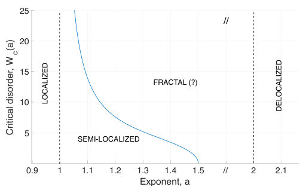
<figcaption class="paper-figure-caption"><b>Fig 1.</b> FIG. 1. Sketch of the phase diagram of the ground state in the momentum space.</figcaption>
</figure>
<figure class="paper-figure-card">
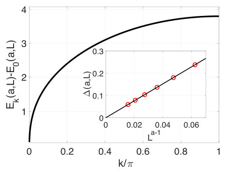
<figcaption class="paper-figure-caption"><b>Fig 2.</b> FIG. 2. Typical single-particle energy spectrum Ek(a, L) − E0(a, L) for a = 1.4. Inset: The scaling of energy gap ∆(a, L) between the ground state and the first excited state as a func- tion of La−1. The straight line is a linear fit.</figcaption>
</figure>
<figure class="paper-figure-card">
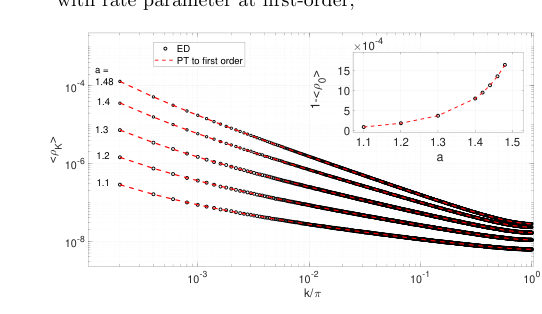
<figcaption class="paper-figure-caption"><b>Fig 3.</b> FIG. 3. ED and PT results for the mean normalized tail intensities ⟨ρK⟩, shown on a log–log scale at fixed disorder amplitude W = 0.1 for L = 104. Different curves correspond to different values of a. Inset: 1 −⟨ρ0⟩as a function of a. Error bars are smaller than the symbol size. The PT results to first order reproduce the ED results with the accuracy of few percent.</figcaption>
</figure>
<figure class="paper-figure-card">

<figcaption class="paper-figure-caption"><b>Fig 4.</b> Figure 3 compares the exact-diagonalization (ED) and perturbation-theory (PT) results for the mean normal- ized tail intensities ⟨ρK⟩at a fixed disorder strength W = 0.1 for L = 104. We observe excellent agreement between the two approaches over the full momentum</figcaption>
</figure>
<figure class="paper-figure-card">
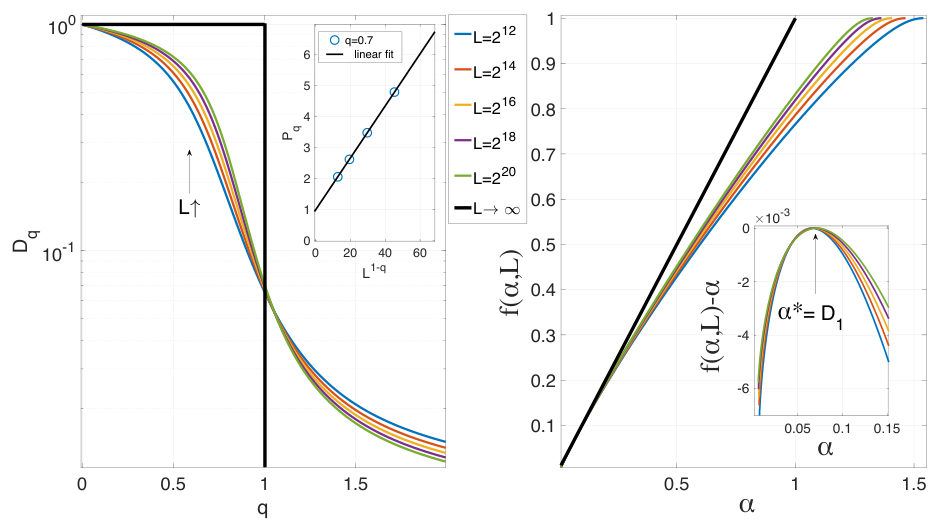
<figcaption class="paper-figure-caption"><b>Fig 5.</b> FIG. 4. Left panel: Fractal dimensions Dq obtained from PT for several system sizes L at fixed disorder strength W = 0.6 and a = 1.48. The black solid curve denotes the predicted thermodynamic-limit for Dq, Eq. (47). The finite-size data converge toward this limit with increasing L but the convergence is very slow. Inset: Finite-size scaling of Pq at fixed q = 0.7, illustrating the fit to the ansatz Pq = aq + bqL1−q. The solid line is a linear fit. Right panel: Corresponding singularity spectrum f(α, L) obtained via Legendre transform of τL(q) = −ln Pq/ ln L. The singularity spectrum approaches at L →∞the semi-localized form f(α, ∞) ≡f(α) = α, (0 &lt; α &lt; 1), predicted by perturbation theory,...</figcaption>
</figure>
</div>
<p><strong>Summary.</strong> This theoretical work analyzes quantum localization in 1D systems with long-range hopping and disorder. Using advanced perturbation theory and SUSY techniques, the authors find that the ground state exhibits a unique 'semi-localized' state for certain hopping decay rates. This is quantified by a specific set of fractal dimensions, extending the understanding of wave function statistics in disordered quantum matter.</p>
<p><strong>Why it may be interesting.</strong> The concept of 'semi-localization' and the derivation of multifractal spectra provide a detailed theoretical understanding of how disorder affects quantum wavefunctions beyond simple localization/delocalization transitions, which is relevant for understanding transport in disordered quantum materials.</p>
<details>
<summary>Detailed structure</summary>
<p><strong>Main problem.</strong> The paper investigates the localization properties of a quantum particle in a 1D system subjected to long-range hopping and diagonal disorder, focusing on the ground state in momentum space.</p>
<p><strong>Main result.</strong> For specific hopping decay rates ($1 < a < 3/2$), the ground state exhibits 'semi-localization' rather than conventional localization, characterized by a specific set of fractal dimensions $D_q$.</p>
<p><strong>Method.</strong> The analysis employs weak-disorder perturbation theory in the momentum basis, supplemented by techniques utilizing supersymmetric (SUSY) structure decomposition and asymptotic analysis of wavefunction moments.</p>
<p><strong>Model / system.</strong> The model is a 1D quantum system described by a Hamiltonian with long-range hopping amplitudes $t(r) \propto r^{-a}$ and on-site disorder $\epsilon_i$. The study focuses on the ground state properties.</p>
<p><strong>Key observables.</strong> Generalized fractal dimensions ($D_q$), normalized momentum-space intensity ($
ho_K$), and the zero-momentum mode weight ($
ho_0$).</p>
<p><strong>Important parameters / regimes.</strong> The hopping decay exponent $a$, which dictates the behavior; the disorder strength $W$; and the hybridization parameter $\epsilon$.</p>
<p><strong>Assumptions / limitations.</strong> The analysis relies heavily on weak-disorder perturbation theory (up to second order in $W$) and asymptotic limits for large system size $L$.</p>
<p><strong>Figures summary.</strong> Figures compare Exact Diagonalization (ED) results with Perturbation Theory (PT) predictions for the energy spectrum, moment ratios, and the fractal dimensions $D_q$ across different disorder strengths.</p>
<p><strong>Paper structure.</strong> The paper progresses by defining the Hamiltonian and the physical problem, applying SUSY and perturbation theory to derive expressions for wavefunction moments, and finally analyzing the asymptotic behavior of these moments to determine the fractal dimensions $D_q$ in different regimes of the parameter $a$.</p>
</details>
<details>
<summary>Abstract</summary>
<p>We study the localization of a quantum particle in a one-dimensional disordered system with long-range hopping amplitudes $t(r)\propto r^{-a}$. In contrast to the standard one-dimensional Anderson model ($a\to\infty$), in which all states are localized and the localization length is minimal at the band edge, the long-range model with $1<a<3/2$ exhibits a disorder-driven transition at the band edge, while high-energy states remain localized at arbitrary disorder strength. We investigate this transition for the ground state in momentum space. In the weak-disorder regime, we derive perturbative expressions for the characteristic functions and moments of the momentum-space wave function, as well as for its fractal dimensions. Our results demonstrate that the ground state exhibits $\it semilocalization$ rather than conventional localization, thereby extending the class of models displaying the unusual $\it semifractality$ of wave functions.</p>
</details>
<p><sub><a href="#top">↑ back to top</a></sub></p>

<p><a id="paper-2608.25195"></a></p>
<h3 id="separating-quantum-indistinguishability-obfuscation-from-falsifiable-assumptions"><a href="http://arxiv.org/abs/2608.25195v1">Separating Quantum Indistinguishability Obfuscation from Falsifiable Assumptions</a></h3>
<p><strong>Authors:</strong> Mohammed Barhoush, Tomoyuki Morimae, Ramis Movassagh<br>
<strong>Type:</strong> theory · <strong>Category:</strong> quantum information and computing · <strong>PDF:</strong> <a href="https://arxiv.org/pdf/2608.25195v1">https://arxiv.org/pdf/2608.25195v1</a><br>
<strong>Analysis basis:</strong> full PDF text, analyzed in chunks</p>
<div class="figure-strip-hint">↔ Scroll figures horizontally</div>
<div class="paper-figures-scroll">
<figure class="paper-figure-card">
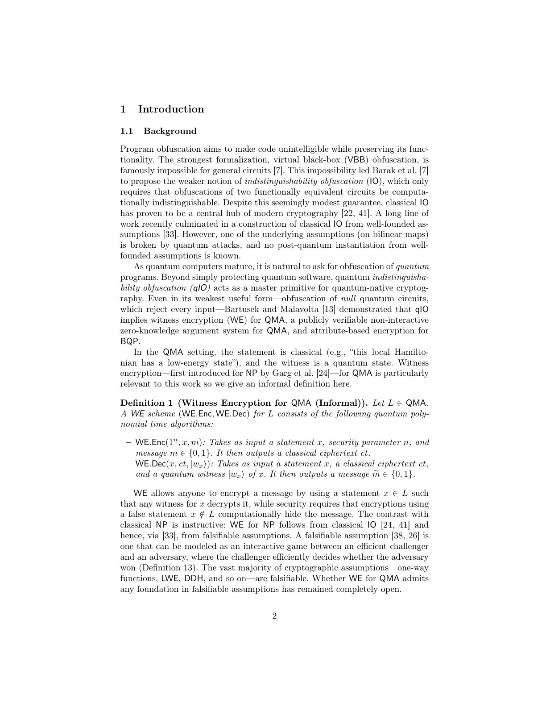
<figcaption class="paper-figure-caption"><b>Fig 1.</b> Low-resolution page preview, page 2</figcaption>
</figure>
<figure class="paper-figure-card">
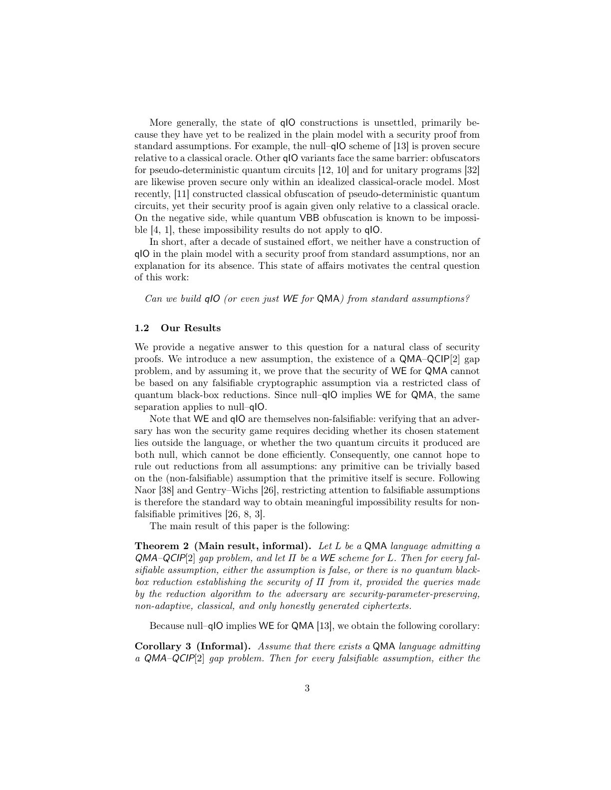
<figcaption class="paper-figure-caption"><b>Fig 2.</b> Low-resolution page preview, page 3</figcaption>
</figure>
<figure class="paper-figure-card">
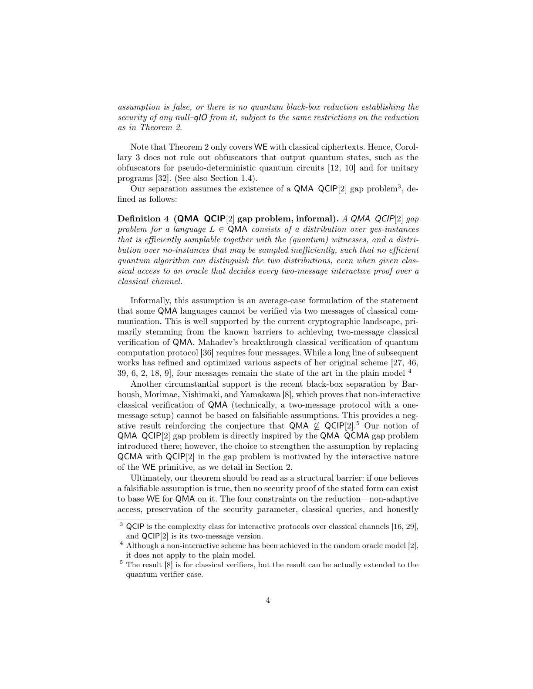
<figcaption class="paper-figure-caption"><b>Fig 3.</b> Low-resolution page preview, page 4</figcaption>
</figure>
<figure class="paper-figure-card">
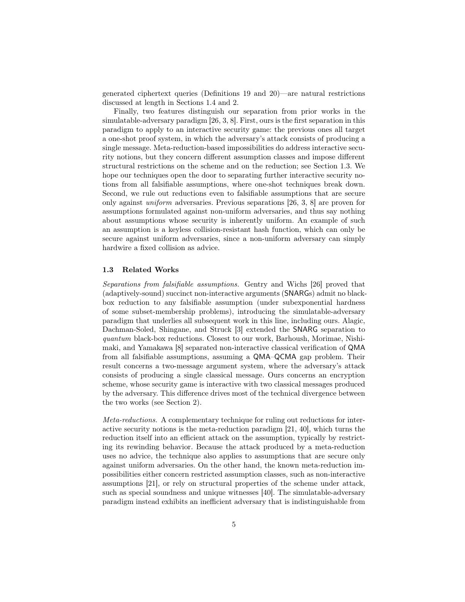
<figcaption class="paper-figure-caption"><b>Fig 4.</b> Low-resolution page preview, page 5</figcaption>
</figure>
<figure class="paper-figure-card">
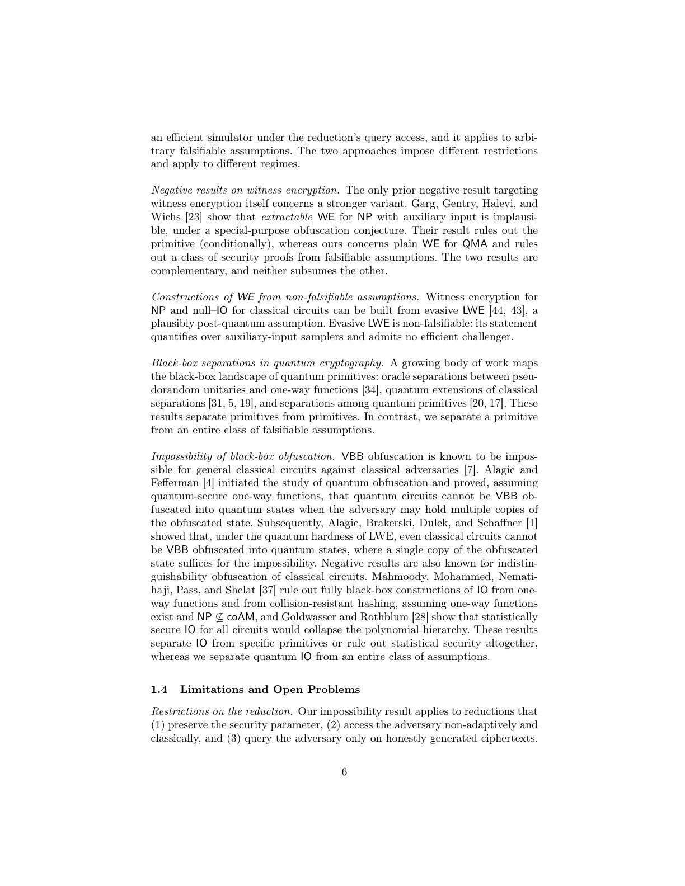
<figcaption class="paper-figure-caption"><b>Fig 5.</b> Low-resolution page preview, page 6</figcaption>
</figure>
</div>
<p><strong>Summary.</strong> This paper tackles the fundamental cryptographic question of whether quantum indistinguishability obfuscation (qIO) can be secured using standard, falsifiable computational assumptions. By proving an impossibility result under specific reduction constraints, the authors show that qIO security for QMA cannot be based on these assumptions. This establishes a significant theoretical barrier for constructing such primitives.</p>
<p><strong>Why it may be interesting.</strong> While highly theoretical, the concepts of quantum obfuscation and complexity separation are foundational to understanding the limits of quantum cryptography, which underpins many advanced quantum information protocols.</p>
<details>
<summary>Detailed structure</summary>
<p><strong>Main problem.</strong> The paper aims to separate the security of Quantum Indistinguishability Obfuscation (qIO) and Witness Encryption (WE) for QMA from standard, falsifiable cryptographic assumptions.</p>
<p><strong>Main result.</strong> It proves that the security of WE for QMA cannot be based on any falsifiable cryptographic assumption under a restricted class of quantum black-box reductions, thereby establishing a structural barrier for qIO security.</p>
<p><strong>Method.</strong> The proof utilizes a restricted class of quantum black-box reductions and relies on the existence of a QMA–QCIP[2] gap problem as a necessary assumption.</p>
<p><strong>Model / system.</strong> The work operates within the framework of quantum computation, focusing on quantum circuits, the complexity class QMA, and cryptographic primitives like qIO and WE.</p>
<p><strong>Key observables.</strong> The advantage of the qIO-adversary, which measures the success probability of breaking the obfuscation scheme.</p>
<p><strong>Important parameters / regimes.</strong> The security parameter $n$, and the assumption of a QMA–QCIP[2] gap problem.</p>
<p><strong>Assumptions / limitations.</strong> The result is restricted to WE with classical ciphertexts and relies on the existence of the QMA–QCIP[2] gap problem; it does not cover all possible reductions or quantum state outputs.</p>
<p><strong>Paper structure.</strong> The paper establishes the formal definitions for null-qIO and WE for QMA, then constructs the restricted null-qIO reduction, culminating in a theorem that proves the separation between the security of qIO and falsifiable assumptions.</p>
</details>
<details>
<summary>Abstract</summary>
<p>Quantum indistinguishability obfuscation (qIO) aims to make a quantum circuit unintelligible while preserving its functionality. It serves as a foundational primitive for advanced applications, such as witness encryption (WE) for QMA, non-interactive zero-knowledge arguments for QMA, and attribute-based encryption for BQP. Despite its importance, constructing qIO from standard assumptions remains a major open problem.   In this work, we prove that the security of WE for QMA cannot be based on any falsifiable cryptographic assumption via a restricted class of quantum black-box reductions. Because qIO for null quantum circuits implies WE for QMA, this also separates null-qIO from falsifiable assumptions. Since almost all standard cryptographic assumptions are falsifiable, our result presents a barrier to basing qIO on standard cryptographic assumptions.   The reductions we rule out are restricted: the reduction must query the adversary classically, non-adaptively, at the same security parameter, and only on honestly generated ciphertexts. Moreover, our impossibility applies only to WE with classical ciphertexts, and therefore does not rule out qIO with obfuscators whose output is a quantum state. Ruling out more general reductions, as well as more general forms of WE and qIO, remains open.   Our impossibility relies on the existence of a QMA-QCIP[2] gap problem, an average-case assumption postulating a QMA language that cannot be verified with two messages of classical communication.</p>
</details>
<p><sub><a href="#top">↑ back to top</a></sub></p>

<p><a id="paper-2608.25961"></a></p>
<h3 id="superadditivity-of-classical-communication-over-quantum-channels-via-random-and-deterministic-permutations"><a href="http://arxiv.org/abs/2608.25961v1">Superadditivity of classical communication over quantum channels via random and deterministic permutations</a></h3>
<p><strong>Authors:</strong> Benjamin Lovitz, Peixue Wu<br>
<strong>Type:</strong> theory · <strong>Category:</strong> quantum information and computing · <strong>PDF:</strong> <a href="https://arxiv.org/pdf/2608.25961v1">https://arxiv.org/pdf/2608.25961v1</a><br>
<strong>Analysis basis:</strong> full PDF text, analyzed in chunks</p>
<div class="figure-strip-hint">↔ Scroll figures horizontally</div>
<div class="paper-figures-scroll">
<figure class="paper-figure-card">
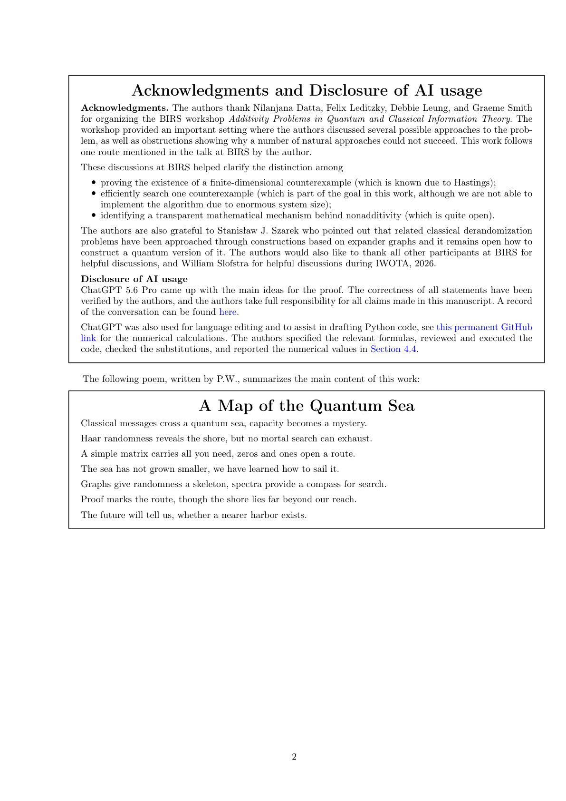
<figcaption class="paper-figure-caption"><b>Fig 1.</b> Low-resolution page preview, page 2</figcaption>
</figure>
<figure class="paper-figure-card">
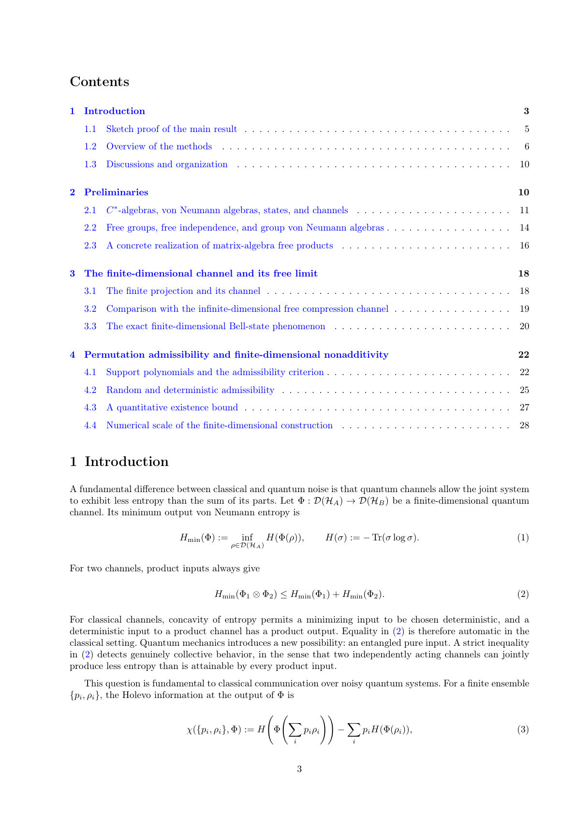
<figcaption class="paper-figure-caption"><b>Fig 2.</b> Low-resolution page preview, page 3</figcaption>
</figure>
<figure class="paper-figure-card">
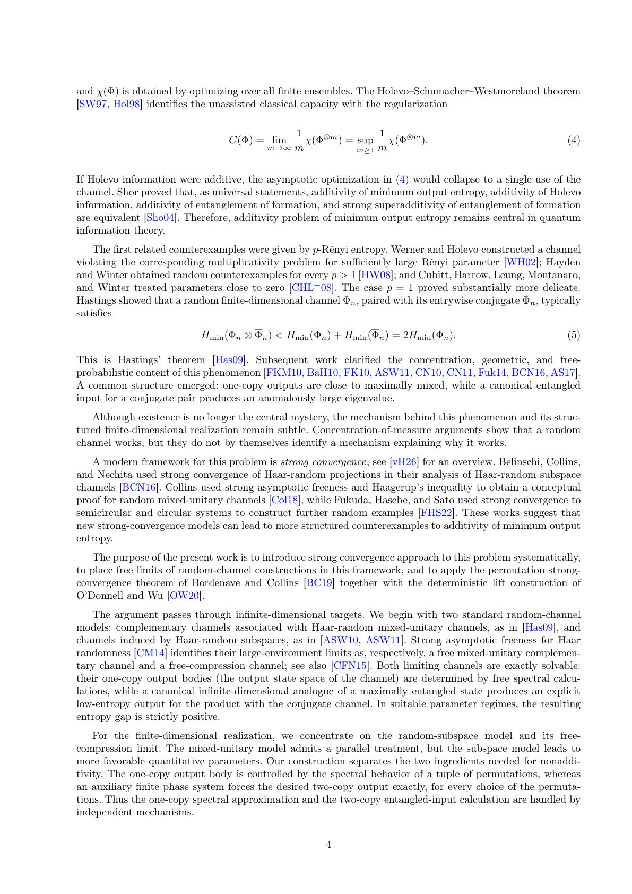
<figcaption class="paper-figure-caption"><b>Fig 3.</b> Low-resolution page preview, page 4</figcaption>
</figure>
<figure class="paper-figure-card">
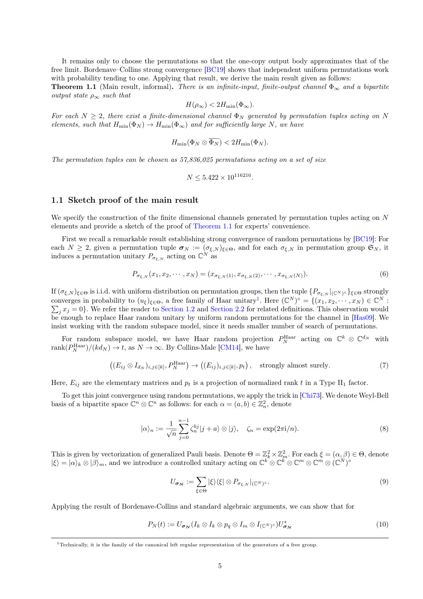
<figcaption class="paper-figure-caption"><b>Fig 4.</b> Low-resolution page preview, page 5</figcaption>
</figure>
<figure class="paper-figure-card">
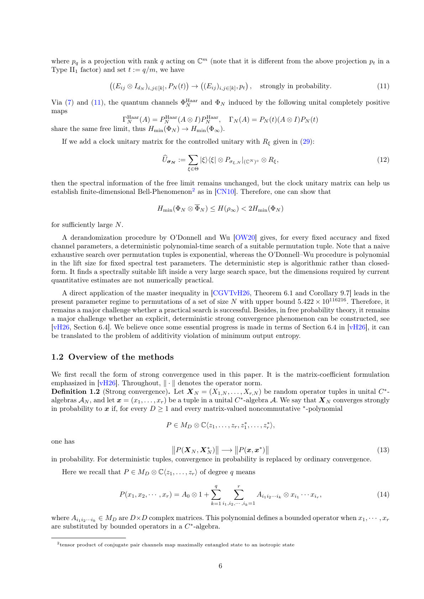
<figcaption class="paper-figure-caption"><b>Fig 5.</b> Low-resolution page preview, page 6</figcaption>
</figure>
</div>
<p><strong>Summary.</strong> This paper tackles the superadditivity of classical communication over quantum channels by replacing continuous random unitaries with discrete random permutations. This transformation converts the problem into a combinatorial one, allowing for asymptotic derandomization. While the theory provides powerful structural tools, the required system sizes for explicit counterexamples remain computationally infeasible.</p>
<p><strong>Why it may be interesting.</strong> This work provides deep structural insights into fundamental capacity theorems in quantum information theory, showing how continuous random matrix theory results can be translated into discrete combinatorial statements, which is a major theoretical advance.</p>
<details>
<summary>Detailed structure</summary>
<p><strong>Main problem.</strong> The paper investigates the structural explanation for the superadditivity of classical communication over quantum channels, which was first established using concentration of measure for Haar random unitaries.</p>
<p><strong>Main result.</strong> The authors show that the continuous problem over unitaries can be replaced by a discrete combinatorial problem over random permutations, leading to asymptotic derandomization of the nonadditivity proof.</p>
<p><strong>Method.</strong> The approach involves replacing Haar randomness with random permutations, utilizing theorems like Bordenave and Collins, and employing asymptotic constructions derived from strong convergence in free probability theory.</p>
<p><strong>Model / system.</strong> The study concerns finite-dimensional quantum channels $\Phi: D(\mathcal{H}_A) 	o D(\mathcal{H}_B)$, analyzed using the random-subspace model. The core comparison is between the minimum output von Neumann entropy of the tensor product channel versus the sum of individual minimum entropies.</p>
<p><strong>Key observables.</strong> Minimum output von Neumann entropy ($H_{\min}$), Holevo information ($\chi$), and the comparison $H_{\min}(\Phi_1 \otimes \Phi_2)$ vs $H_{\min}(\Phi_1) + H_{\min}(\Phi_2)$.</p>
<p><strong>Important parameters / regimes.</strong> The required system size $N$ for a finite counterexample is astronomically large ($N \le 5.422 	imes 10^{116216}$), indicating the difficulty of practical construction.</p>
<p><strong>Assumptions / limitations.</strong> The primary assumption is that the limiting geometry responsible for nonadditivity is preserved when moving from continuous Haar randomness to discrete random permutations.</p>
<p><strong>Paper structure.</strong> The paper progresses by first establishing the connection between Haar randomness and random permutations, then providing asymptotic constructions for derandomization, and finally presenting explicit, albeit numerically enormous, finite-dimensional counterexamples to superadditivity.</p>
</details>
<details>
<summary>Abstract</summary>
<p>Since Hastings' proof of superadditivity of classical communication over quantum channels, considerable effort has been devoted to finding a structural explanation of this phenomenon that was originally established by concentration of measure for Haar random unitaries.   The main observation of this work is that Haar randomness can be replaced by random permutations without changing the limiting geometry responsible for nonadditivity. This replacement turns a continuous problem over unitary matrices into a discrete combinatorial problem over zero--one permutation matrices, and thereby opens a path toward derandomization.   The theorem of Bordenave and Collins shows that random permutations have the required limiting behavior and the algorithm of O'Donnell and Wu then provides a deterministic asymptotic construction, running in polynomial time in the size when the channel parameters and accuracy are fixed. Thus the random construction can be derandomized in an asymptotic algorithmic sense, although finding a simple closed-form or practically computable counterexample remains open.   Finally, a quantitative random permutation estimate by Chen, Garza-Vargas, Tropp and van Handel gives a fully numerical estimate: there exists a tuple of 57,836,025 permutations acting on a set of size \[ N \le 5.422\times 10^{116216}\] such that the associated finite dimensional channel exhibits nonadditivity. This enormous value remains an obstacle to a practical construction.</p>
</details>
<p><sub><a href="#top">↑ back to top</a></sub></p>

<p><a id="paper-2608.25914"></a></p>
<h3 id="switchable-heavy-holelight-hole-spin-qubit"><a href="http://arxiv.org/abs/2608.25914v1">Switchable heavy-hole/light-hole spin qubit</a></h3>
<p><strong>Authors:</strong> Zoltán György, Dmitry Miserev, Jelena Klinovaja, Daniel Loss<br>
<strong>Type:</strong> theory · <strong>Category:</strong> quantum information and computing · <strong>PDF:</strong> <a href="https://arxiv.org/pdf/2608.25914v1">https://arxiv.org/pdf/2608.25914v1</a><br>
<strong>Analysis basis:</strong> full PDF text, analyzed in chunks</p>
<div class="figure-strip-hint">↔ Scroll figures horizontally</div>
<div class="paper-figures-scroll">
<figure class="paper-figure-card">
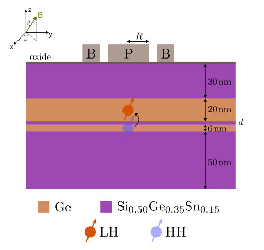
<figcaption class="paper-figure-caption"><b>Fig 1.</b> FIG. 1. Heterostructure for switchable heavy-hole/light-hole spin qubit. The SiGeSn barriers are assumed to be un- strained, while the Ge quantum wells are slightly tensile- strained. A single hole is confined in the lower layer, where it has heavy-hole character. After shuttling it to the upper Ge layer, it becomes a light-hole qubit. The two barrier gates (B) provide the in-plane confinement, while the plunger gate (P) is used for shuttling.</figcaption>
</figure>
<figure class="paper-figure-card">
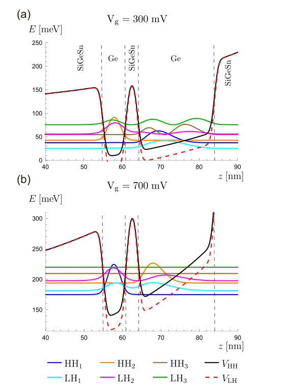
<figcaption class="paper-figure-caption"><b>Fig 2.</b> FIG. 2. Quantum well confinement and lowest eigenstates. The quantum well confinement profile is shown for heavy holes (black curve) and light holes (red dashed line), together with the lowest three heavy-hole and light-hole eigenstates from Eq. (5). By changing the gate voltage Vg, we can tune the character of the ground state from (a) light hole (LH1) to (b) heavy hole (HH1).</figcaption>
</figure>
<figure class="paper-figure-card">
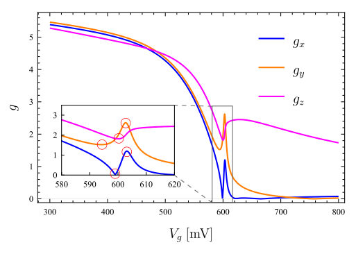
<figcaption class="paper-figure-caption"><b>Fig 3.</b> FIG. 3. Effective qubit g-factors as a function of plunger gate voltage Vg. The magnetic field is along the x (blue line), y (orange line), or z (magenta line) direction. The qubit tran- sitions from the light-hole regime to the heavy-hole regime. In the heavily mixed regime, around Vg = 602.7 mV, the g-factors show nonmonotonic behavior. The red circles show first-order charge noise sweet spots. The confinement frequen- cies are ℏωx = 2 meV, ℏωy = 2.6 meV, and the barrier width is d = 3 nm (see Fig. 1).</figcaption>
</figure>
<figure class="paper-figure-card">
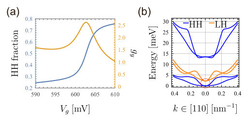
<figcaption class="paper-figure-caption"><b>Fig 4.</b> FIG. 4. HH-LH resonance and g-factor peak. (a) The g-factor gy as a function of gate voltage (orange curve) and the heavy- hole fraction of the quantum dot ground state (blue curve). At the g-factor peak, the qubit has a fully hybridized HH-LH state, with 50% HH fraction. The confinement frequencies are ℏωx = 2 meV and ℏωy = 2.6 meV, the barrier width is d = 3 nm. (b) 2DHG spectrum at the gate voltage corresponding to the g-factor peak, Vg = 602.7 mV. The blue curves are heavy- hole subbands, and the orange curves are light-hole subbands. The red circle shows the four spin-split subbands participating in the HH-LH resonance.</figcaption>
</figure>
<figure class="paper-figure-card">
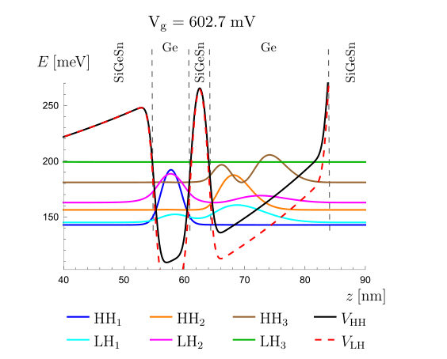
<figcaption class="paper-figure-caption"><b>Fig 5.</b> FIG. 5. Quantum well confinement and eigenstates at the HH- LH resonance, at Vg = 602.7 mV with a barrier width d = 3 nm. The HH-LH splitting between the lowest HH (dark blue) and the lowest LH (light blue) state is small enough for the resonance to be induced by the in-plane confinement. There is also substantial overlap between these wavefunctions in the thin Ge well.</figcaption>
</figure>
</div>
<p><strong>Summary.</strong> This paper proposes a novel switchable heavy-hole/light-hole spin qubit architecture in a Ge heterostructure. By shuttling the hole state between HH and LH regimes, the device combines the robustness of HH qubits with the strong spin-orbit coupling of LH qubits. Theoretical calculations predict high coherence times ($100 \mu$s) and fast gate operations, advancing the feasibility of solid-state quantum computation.</p>
<p><strong>Why it may be interesting.</strong> This work directly addresses the hardware realization of solid-state qubits, providing theoretical predictions for optimizing coherence times and control mechanisms in semiconductor quantum dots, which is central to quantum information science.</p>
<details>
<summary>Detailed structure</summary>
<p><strong>Main problem.</strong> The research aims to develop a highly controllable and switchable spin qubit by combining the best features of heavy-hole (HH) and light-hole (LH) spin qubits.</p>
<p><strong>Main result.</strong> The authors propose a switchable HH-LH qubit in a bilayer Ge heterostructure that achieves a coherence time significantly longer than the LH regime while maintaining fast gate operation.</p>
<p><strong>Method.</strong> The study uses theoretical modeling based on the 6-band Luttinger-Kohn-Bir-Pikus Hamiltonian, incorporating quantum well and in-plane confinement potentials.</p>
<p><strong>Model / system.</strong> The physical system is a bilayer Ge heterostructure with SiGeSn barriers, allowing the hole qubit character to be tuned between HH and LH states via gate voltage shuttling.</p>
<p><strong>Key observables.</strong> Effective qubit g-factors ($g_x, g_y, g_z$), coherence time ($T_2$), and Rabi frequencies.</p>
<p><strong>Important parameters / regimes.</strong> Gate voltages ($V_g$), in-plane confinement strengths ($\omega_x, \omega_y$), and the material composition of the barriers (SiGeSn).</p>
<p><strong>Assumptions / limitations.</strong> The model uses an anisotropic harmonic potential for in-plane confinement and approximates the plunger gate potential; linear interpolation for Luttinger parameters is noted as potentially inaccurate.</p>
<p><strong>Figures summary.</strong> Figures illustrate the heterostructure geometry, quantum well confinement profiles for HH and LH states as a function of gate voltage, and plots of effective qubit g-factors versus gate voltage, highlighting the HH-LH resonance.</p>
<p><strong>Paper structure.</strong> The paper first introduces the concept of combining HH and LH advantages, models the system using the LKBP Hamiltonian, details the gate-tunable switching mechanism, and presents calculations showing enhanced coherence and resonance features.</p>
</details>
<details>
<summary>Abstract</summary>
<p>Compressively strained Ge quantum wells in planar SiGe/Ge heterostructures are the state-of-the-art platform for hole spin qubits. While they exhibit robust coherence times, they possess weak intrinsic spin-orbit interaction (SOI) due to the heavy-hole (HH) character of the wavefunction. Recently, light-hole (LH) qubits were proposed in GeSn/Ge heterostructures, offering strong, intrinsic, linear-in-momentum SOI. In this work, we propose a switchable HH-LH spin qubit in a bilayer Ge heterostructure with SiGeSn barriers, combining the advantages of HH and LH devices. The character of the qubit can be changed by shuttling from an LH well to an HH well, which also enables fast, hopping-based single-qubit rotations. Additionally, we observe an HH-LH resonance introduced by the in-plane confinement, resulting in $g$-factor peaks and first-order charge noise sweet spots. Our calculations reveal a sweet spot with Rabi frequencies on the order of 100 MHz, comparable to the LH regime, but with a more than tenfold increase in coherence time, on the order of 100 $μ$s.</p>
</details>
<p><sub><a href="#top">↑ back to top</a></sub></p>

<p><a id="paper-2608.26022"></a></p>
<h3 id="symmetry-origins-of-the-field-free-superconducting-diode-effect-in-the-kagome-superconductor-csvmath786mathsbmath787math"><a href="http://arxiv.org/abs/2608.26022v1">Symmetry Origins of the Field-Free Superconducting Diode Effect in the Kagome Superconductor CsV$_3$Sb$_5$</a></h3>
<p><strong>Authors:</strong> Xin-Jie Liu, Shengbiao Sun, Ke-Fan Song, Jia-Peng Peng, Xilin Feng, Lang Xiao, Tong Liu, Qilin Han, Ya-Qing Bie, Ning Kang, Xiaosong Wu, Yanfei Wu, Shouguo Wang, Kam Tuen Law, Shuo Wang, Dapeng Yu, Ben-Chuan Lin<br>
<strong>Type:</strong> experiment · <strong>Category:</strong> other · <strong>PDF:</strong> <a href="https://arxiv.org/pdf/2608.26022v1">https://arxiv.org/pdf/2608.26022v1</a><br>
<strong>Analysis basis:</strong> full PDF text, analyzed in chunks</p>
<div class="figure-strip-hint">↔ Scroll figures horizontally</div>
<div class="paper-figures-scroll">
<figure class="paper-figure-card">
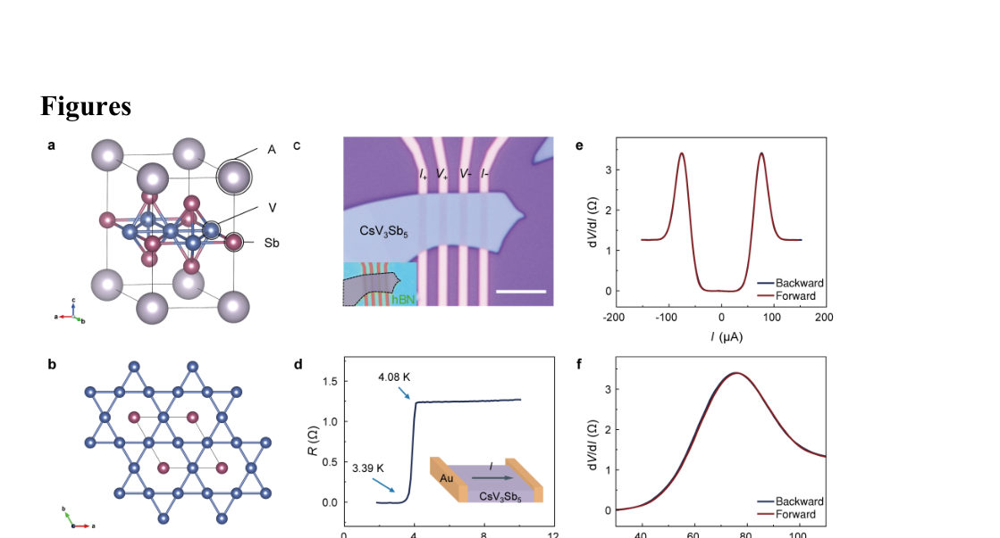
<figcaption class="paper-figure-caption"><b>Fig 1.</b> Fig. 1. Pristine encapsulated CsV3Sb5 devices exhibit no field-free superconducting diode effect. a Crystal structure of AV3Sb5. The kagome lattice is formed by V atoms (blue), while Sb atoms (pink) occupy two distinct sites. b The V–Sb sublattice forms a kagome network, with V atoms arranged in a corner-sharing triangular lattice and Sb atoms located at the centers of the kagome hexagons. c Optical micrograph of CsV3Sb5 Device 1. The inset shows the same device encapsulated with hBN. Current is applied through I+ and I–, and voltage is measured between V+ and V–. Scale bar, 5 μm. d Resistance versus temperature for Device 1. Left arrows mark Tconset = 4.08 K and Tczero = 3.39 K....</figcaption>
</figure>
<figure class="paper-figure-card">
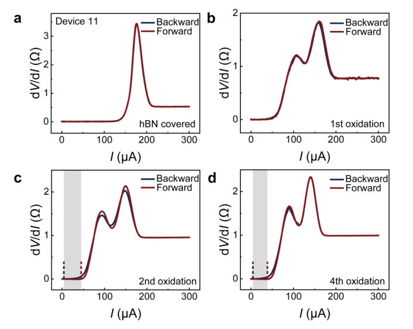
<figcaption class="paper-figure-caption"><b>Fig 2.</b> Fig. 2. Surface oxidation induces a field-free diode response by breaking inversion</figcaption>
</figure>
<figure class="paper-figure-card">
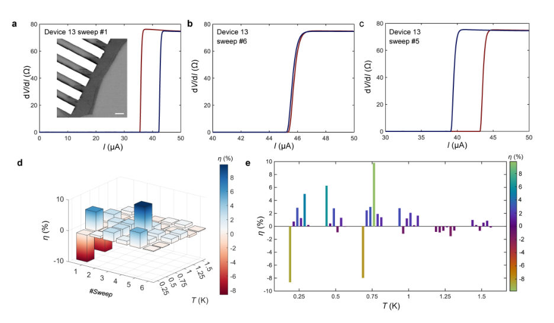
<figcaption class="paper-figure-caption"><b>Fig 3.</b> Fig. 3. Geometrically inversion-broken devices show stochastic field-free superconducting</figcaption>
</figure>
<figure class="paper-figure-card">
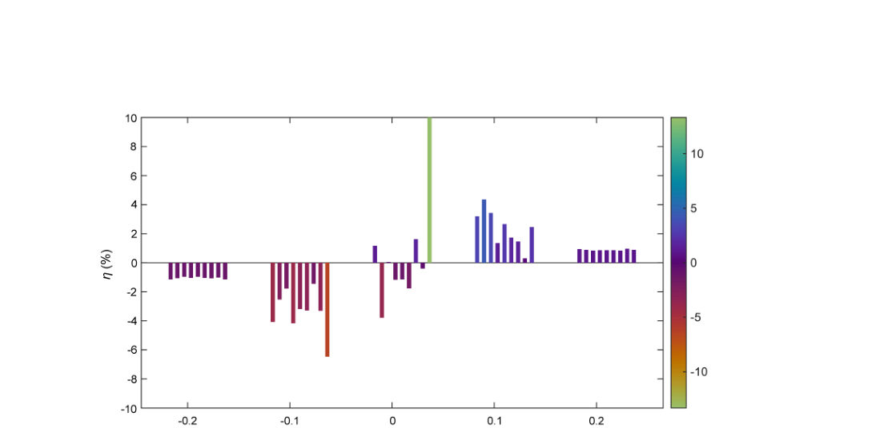
<figcaption class="paper-figure-caption"><b>Fig 4.</b> Fig. 4. Out-of-plane magnetic fields stabilize the stochastic superconducting diode response. Diode efficiency of Device 13 under magnetic fields between -0.2 and 0.2 T, with nine consecutive sweeps at each field. The field fixes the diode polarity and, at larger magnitude, stabilizes the amplitude.</figcaption>
</figure>
</div>
<p><strong>Summary.</strong> This experimental work investigates the superconducting diode effect in CsV3Sb5, finding that the effect only appears when inversion symmetry is externally broken. Crucially, the authors link this non-reciprocal supercurrent to the presence of charge-density-wave order, demonstrating that suppressing the CDW order eliminates the diode effect.</p>
<p><strong>Why it may be interesting.</strong> The work provides a detailed experimental test of symmetry protection in superconductivity, linking macroscopic transport phenomena (diode effect) to microscopic electronic orders (CDW) and symmetry breaking mechanisms.</p>
<details>
<summary>Detailed structure</summary>
<p><strong>Main problem.</strong> The study investigates the origin and symmetry requirements for the field-free superconducting diode effect (SDE) in the Kagome superconductor CsV3Sb5.</p>
<p><strong>Main result.</strong> The SDE requires extrinsic inversion symmetry breaking and is linked to time-reversal symmetry (TRS) breaking associated with the charge-density-wave (CDW) order, as its disappearance upon CDW suppression confirms this link.</p>
<p><strong>Method.</strong> The authors performed transport measurements (dI/dV) on fabricated devices, systematically inducing symmetry breaking via surface oxidation or asymmetric etching, and comparing results with doped samples.</p>
<p><strong>Model / system.</strong> The physical system is the Kagome superconductor CsV3Sb5, which is centrosymmetric. The study probes the superconducting state's response to symmetry breaking, particularly focusing on the interplay between inversion symmetry, TRS, and CDW order.</p>
<p><strong>Key observables.</strong> Diode asymmetry parameter ($\eta$), nonreciprocal supercurrent ($ ext{I}<em c->{c+} 
eq  ext{I}</em>$), and the stability of the diode response under applied magnetic fields.</p>
<p><strong>Important parameters / regimes.</strong> Temperature (low T, e.g., 1.8 K), applied magnetic fields (out-of-plane and in-plane), and the degree of CDW order (controlled by Ti doping).</p>
<p><strong>Assumptions / limitations.</strong> The initial pristine state is assumed to be centrosymmetric and thus diode-inactive; the stochastic nature is interpreted as arising from metastable domain configurations.</p>
<p><strong>Figures summary.</strong> Figures illustrate the induction of SDE via oxidation/etching, show the stochastic nature of the response across multiple sweeps, demonstrate field stabilization of the diode polarity, and confirm the loss of SDE upon Ti doping.</p>
<p><strong>Paper structure.</strong> The paper establishes the baseline (pristine, no SDE), then demonstrates the activation of SDE through controlled symmetry breaking (oxidation/etching). It characterizes the stochastic nature and field dependence, and finally confirms the underlying physical mechanism by showing the SDE vanishes when the CDW order is suppressed by doping.</p>
</details>
<details>
<summary>Abstract</summary>
<p>Field-free superconducting diode effects require both inversion-symmetry breaking and an internal time-reversal-symmetry (TRS) breaking field, making them sensitive probes of hidden order in superconductors. In centrosymmetric kagome AV$_3$Sb$_5$, the inversion symmetry generally should generally preclude the observation of the superconducting diode effect. Furthermore, though TRS breaking has been reported in the superconducting regime of CsV$_3$Sb$_5$, whether it is generated by superconductivity or inherited from charge-density-wave (CDW) order remains unresolved. Here we show that pristine CsV$_3$Sb$_5$ devices exhibit no intrinsic field-free superconducting diode effect, whereas surface oxidation or asymmetric etching activates a large nonreciprocal supercurrent. Moreover, the response is stochastic, with sweep-dependent polarity and magnitude, indicating metastable TRS-breaking domain configurations. Small out-of-plane magnetic fields stabilize the superconducting diode response, consistent with field selection of such domains. Finally, when long-range CDW order is suppressed by Ti doping, the SDE disappears. Our results establish the symmetry requirements for the field-free SDE in CsV$_3$Sb$_5$, reveal its stochastic domain-controlled character, and link superconducting-state TRS breaking to CDW-related order.</p>
</details>
<p><sub><a href="#top">↑ back to top</a></sub></p>
</details>
<h2 id="secondary-cond-mat-archives">Secondary cond-mat archives</h2>
<p><em>Papers from cond-mat.mtrl-sci, mes-hall, other, soft, supr-con. These archives are de-prioritized — they appear at the end regardless of relevance score.</em></p>
<h3 id="relevant-in-secondary-archives-16">Relevant in secondary archives (16)</h3>

<p><a id="paper-2608.26057"></a></p>
<h3 id="depth-control-of-room-temperature-quantum-emitters-in-gallium-nitride"><a href="http://arxiv.org/abs/2608.26057v1">Depth Control of Room-Temperature Quantum Emitters in Gallium Nitride</a></h3>
<p><strong>Authors:</strong> Alexandros Bampis, Johann Stachurski, Anna Schwab, Jean-François Carlin, Raphaël Butté, Nicolas Grandjean<br>
<strong>Type:</strong> experiment · <strong>Category:</strong> other · <strong>PDF:</strong> <a href="https://arxiv.org/pdf/2608.26057v1">https://arxiv.org/pdf/2608.26057v1</a><br>
<strong>Analysis basis:</strong> full PDF text, analyzed in chunks
<strong>Topic relevance:</strong> 🔥 <code>quantum optics experiment</code> <strong>4/5</strong> · <code>Tavis-Cummings &amp; cavity-many-emitter</code> <strong>2/5</strong> · <code>QC/QI experiment</code> <strong>1/5</strong> · <code>analog quantum simulation</code> <strong>1/5</strong> · <code>driven-dissipative phase transition</code> <strong>1/5</strong> · <code>interference shaping light</code> <strong>1/5</strong> · <code>methods for driven-dissipative</code> <strong>1/5</strong> · <code>quantum measurements</code> <strong>1/5</strong></p>
<div class="figure-strip-hint">↔ Scroll figures horizontally</div>
<div class="paper-figures-scroll">
<figure class="paper-figure-card">
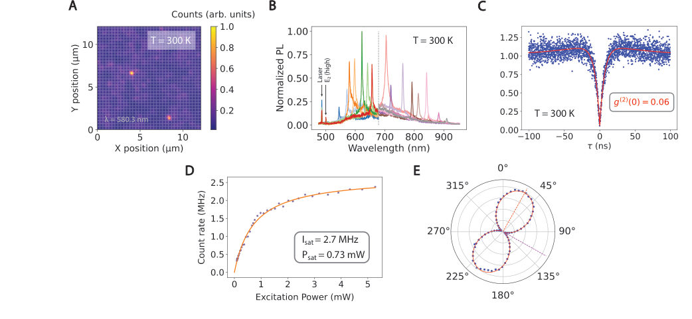
<figcaption class="paper-figure-caption"><b>Fig 1.</b> Figure 1: Optical properties of naturally occurring emitters in GaN. (A) Room-temperature PL map of a GaN layer grown on c-plane sapphire, displaying the normalized PL intensity within a narrow spectral window centered at 580.3 nm. Two QEs emitting at this wavelength appear as bright spots on the map. (B) Optical signatures of 15 distinct QEs with emission wavelengths ranging from 550 nm to 910 nm. The spectra are selected from 2 PL maps acquired with complementary spectral windows (vertical dashed line). (C) Second-order correlation function measurement of a GaN QE at room temperature fitted with a 3-level system model,24 yielding g(2)(0) = 0.06. The excitation power was set to 12.5 µW in...</figcaption>
</figure>
<figure class="paper-figure-card">
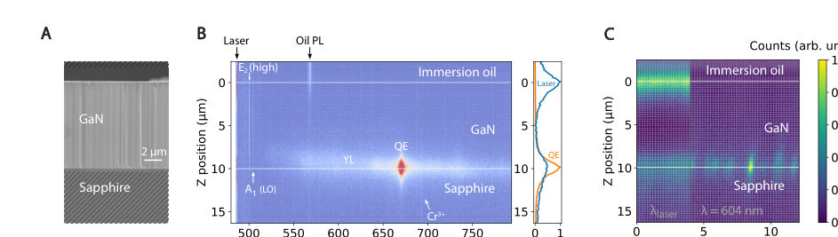
<figcaption class="paper-figure-caption"><b>Fig 2.</b> Figure 2: Depth of naturally occurring emitters in GaN on sapphire. (A) Cross-sectional SEM image of a 10 µm-thick GaN layer. Scale bar: 2 µm. The hatched part of the image is digitally added to match the PL measurement scale. (B) Left: Depth-dependent PL spectrum of a QE embedded in the sample imaged in (A) and emitting at 671 nm. Right: Depth-dependent PL intensity averaged over the laser line (blue) and the QE ZPL (orange). (C) XZ PL map of the same sample plotted at the laser wavelength to highlight the GaN interfaces (left) and at the emission wavelength of a QE (right).</figcaption>
</figure>
<figure class="paper-figure-card">
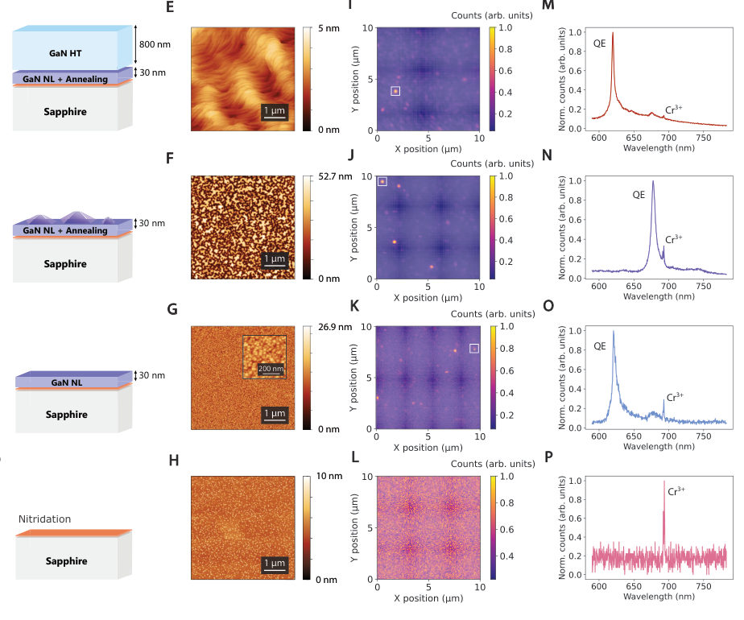
<figcaption class="paper-figure-caption"><b>Fig 3.</b> Figure 3: Growth steps involved in the formation of naturally occurring emitters in GaN on sapphire. (A-D) Schematic of the investigated sample structures employed to identify the growth steps involved in QE formation. The depicted orange layer indicates that the sapphire has undergone nitridation. (E-H) AFM scans of the sample surfaces. (I-K) PL maps at the emission wavelengths of the boxed emitters (0.3 nm bandwidth). The QEs are still present in the nucleation layer of GaN on sapphire. (L) PL map of the nitridated sapphire sample. As no emitter was observed, the map is displayed at 640 nm, chosen as a representative wavelength. (M-O) PL spectra of the highlighted emitters in the...</figcaption>
</figure>
<figure class="paper-figure-card">
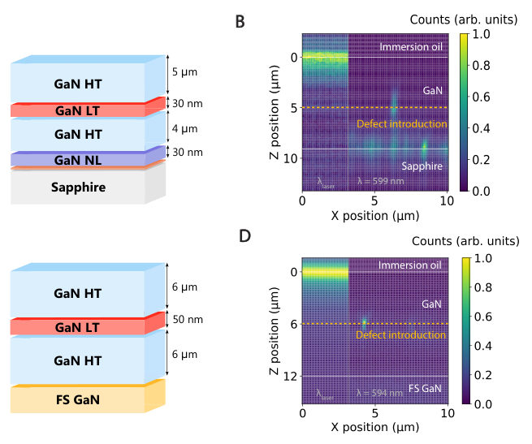
<figcaption class="paper-figure-caption"><b>Fig 4.</b> Figure 4: Controlled depth positioning of QEs in GaN. (A) Structure of the sample grown on sapphire, designed to introduce QEs in GaN at a controlled depth. (B) XZ PL map of the sample shown in (A), revealing naturally occurring emitters at the GaN/sapphire interface and an intentionally introduced emitter at the depth of the LT layer. The left-hand side is plotted at the laser wavelength to highlight the GaN interfaces, while the right-hand side is plotted at the emission wavelength of the introduced emitter located 5 µm within the layer (λ = 599 nm). (C) Structure of the sample grown on FS GaN. (D) XZ PL map of the sample depicted in (C), plotted at the laser wavelength and at the...</figcaption>
</figure>
<figure class="paper-figure-card">
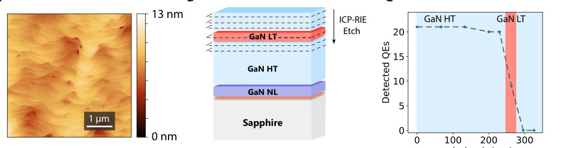
<figcaption class="paper-figure-caption"><b>Fig 5.</b> Figure 5: Localization of intentionally introduced emitters within the GaN layer. (A) 5 µm × 5 µm AFM scan of a sample in which emitters are purposely formed 250 nm below the surface, prior to any fabrication step. The surface is fully coalesced, with an RMS surface roughness of 0.94 nm. (B) Schematic of the sample structure and measurement sequence, with successive µ-PL measurements and ICP-RIE etching. (C) Number of detected QEs within the same sample area as a function of cumulative etch depth. The QEs disappear at the depth of the GaN LT layer.</figcaption>
</figure>
</div>

<p><strong>Summary.</strong> This paper reports a major advance in solid-state quantum emitters by demonstrating precise, depth-controlled placement of bright quantum emitters in Gallium Nitride. By engineering the growth process using a low-temperature interlayer, the authors overcome the natural limitation of emitters being stuck at the substrate interface. This capability is crucial for realizing efficient, cavity-enhanced quantum light sources for quantum technologies.</p>
<p><strong>Why it may be interesting.</strong> This work directly addresses the engineering challenge of coupling solid-state quantum emitters to optical cavities, which is a cornerstone problem in quantum optics and quantum information processing. The precise depth control mechanism is highly relevant for designing integrated quantum photonic circuits.</p>
<details>
<summary>Detailed structure</summary>
<p><strong>Main problem.</strong> The primary challenge is the poor integration of bright, room-temperature quantum emitters (QEs) in Gallium Nitride (GaN) into functional photonic structures due to their natural location near the substrate interface.</p>
<p><strong>Main result.</strong> The authors demonstrated a breakthrough by using a low-temperature GaN interlayer to precisely control the placement of QEs at arbitrary depths within the epilayer, enabling efficient coupling to optical cavities.</p>
<p><strong>Method.</strong> The study combines advanced micro-photoluminescence ($\mu$-PL) mapping, depth-resolved spectroscopy, and epitaxial growth engineering (using low-temperature interlayers) to physically manipulate and characterize the emitters.</p>
<p><strong>Model / system.</strong> The physical system is radiative point defects acting as single-photon emitters within GaN epilayers grown on sapphire. The methodology involves controlling the growth process (e.g., introducing a low-temperature GaN interlayer) to dictate the physical location of these defects.</p>
<p><strong>Key observables.</strong> Narrow linewidths ($\sim 4-6$ nm), high photon count rates ($> 2$ MHz), strong antibunching ($g^{(2)}(0) \le 0.06$), and precise depth control (sub-60 nm accuracy).</p>
<p><strong>Important parameters / regimes.</strong> Room temperature operation, visible to telecom O-band emission, and the ability to place emitters independent of the substrate material.</p>
<p><strong>Assumptions / limitations.</strong> The optical properties of the intentionally introduced QEs are assumed to be comparable to naturally occurring ones, and the depth profiling relies on empirical matching to structural measurements (SEM/SIMS).</p>
<p><strong>Figures summary.</strong> Figures show $\mu$-PL maps confirming emitter localization, depth-resolved XZ PL maps demonstrating depth control, and spectra confirming high-quality single-photon emission characteristics.</p>
<p><strong>Paper structure.</strong> The work progresses from identifying the initial limitation (interface confinement) to developing an engineering solution (LT interlayer deposition) and finally confirming the success of this method by showing depth-tunable, high-quality emitters compatible with cavity fabrication.</p>
</details>
<details>
<summary>Abstract</summary>
<p>Bright quantum emitters are key components for quantum communication systems. Radiative point defects in gallium nitride (GaN) are promising candidates for room-temperature single-photon emission, operating from the visible to the telecom O-band. Despite their potential, their integration into photonic structures has remained limited in the literature, with experimental photon extraction efficiencies far below simulated predictions. To identify the origin of this limitation, we investigate visible and near-infrared quantum emitters in GaN epilayers grown on $c$-plane sapphire substrates exhibiting narrow linewidths ($\sim$4 nm), high photon count rates ($ &gt; $2 MHz), and strong antibunching, reaching $g^{(2)}(0)$ values as low as 0.06 at room temperature. We find that these emitters are located near the GaN/substrate interface, explaining their limited coupling to optical modes. Building on this observation, we show that the insertion of a thin low-temperature GaN interlayer enables the formation of quantum emitters at arbitrary depths with sub-60 nm accuracy, independent of the substrate. The intentionally introduced emitters retain optical properties comparable to naturally occurring ones, including narrow linewidths ($\sim$6 nm), saturation count rates exceeding 1.5 MHz, high Debye-Waller factors (0.69-0.98), and strong antibunching. The resulting epilayer fully coalesces within less than 250 nm ensuring compatibility with GaN-based cavity fabrication and enabling emitter placement within intrinsic regions of p-i-n diode architectures. These results mark a decisive step toward efficient emitter-cavity coupling, enabling the realization of cavity-enhanced quantum emission in GaN.</p>
</details>
<p><sub><a href="#top">↑ back to top</a></sub></p>

<p><a id="paper-2608.26065"></a></p>
<h3 id="lab-earthquakes-confirm-the-theory-of-frictional-slip-pulses"><a href="http://arxiv.org/abs/2608.26065v1">Lab earthquakes confirm the theory of frictional slip pulses</a></h3>
<p><strong>Authors:</strong> Alina Shafir, Tom Gabrieli, Yuval Tal, Eran Bouchbinder<br>
<strong>Type:</strong> both · <strong>Category:</strong> other · <strong>PDF:</strong> <a href="https://arxiv.org/pdf/2608.26065v1">https://arxiv.org/pdf/2608.26065v1</a><br>
<strong>Analysis basis:</strong> full PDF text, analyzed in chunks
<strong>Topic relevance:</strong> <code>Frenkel-Kontorova</code> <strong>3/5</strong> · <code>analog quantum simulation</code> <strong>3/5</strong> · <code>driven-dissipative phase transition</code> <strong>2/5</strong> · <code>non-equilibrium universality</code> <strong>2/5</strong> · <code>Keldysh / 2PI / non-Gaussian methods</code> <strong>1/5</strong> · <code>correlated / nonlocal dissipation</code> <strong>1/5</strong> · <code>methods for driven-dissipative</code> <strong>1/5</strong> · <code>scars &amp; prethermalization</code> <strong>1/5</strong></p>
<div class="figure-strip-hint">↔ Scroll figures horizontally</div>
<div class="paper-figures-scroll">
<figure class="paper-figure-card">
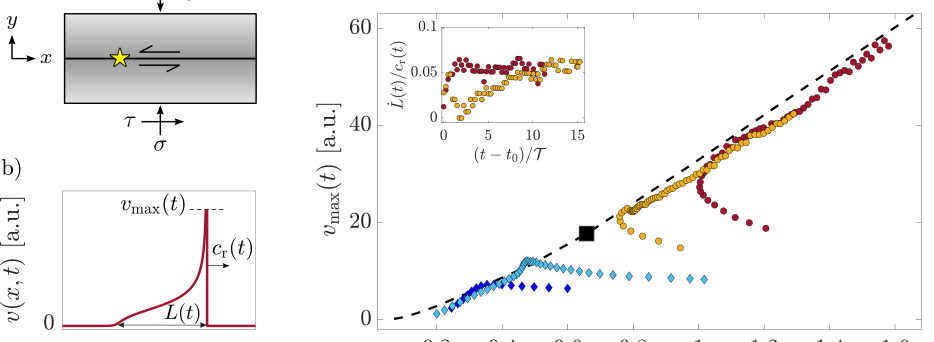
<figcaption class="paper-figure-caption"><b>Fig 1.</b> Fig. 1. Theoretical predictions for the dynamics of slip pulses. (a) A sketch of a frictional system, composed of two large and identical linear elastic blocks, forming a nominally flat contact interface (fault). The coordinate along the fault is x and it is located at y =0, where y is a fault-perpendicular coordinate. The third dimension of the blocks is either small compared to the two other dimensions or the system’s dynamics are independent of it, such that the system is effectively two dimensional (2D). The fault prestress (background stress) features a normal compressive component σ and a shear component τ. Rupture is nucleated at a localized region along the fault (the hypocenter,...</figcaption>
</figure>
<figure class="paper-figure-card">
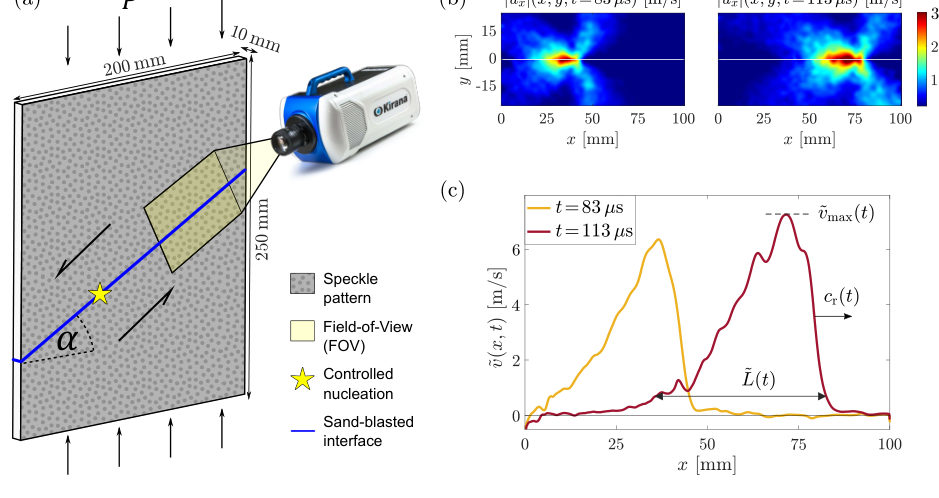
<figcaption class="paper-figure-caption"><b>Fig 2.</b> Fig. 2. Experimental setup and measured slip pulses. (a) A sketch of the experimental system mimicking a natural fault. It is composed of two, quasi-2D (physical dimensions are stated) PMMA plates, forming a nominally flat interface/fault (blue plane) at an angle α relative to a direction perpendicular to an applied compressive stress of magnitude P. These two parameters allow to carefully control the prestress conditions on the fault through the relations τ = 1</figcaption>
</figure>
<figure class="paper-figure-card">
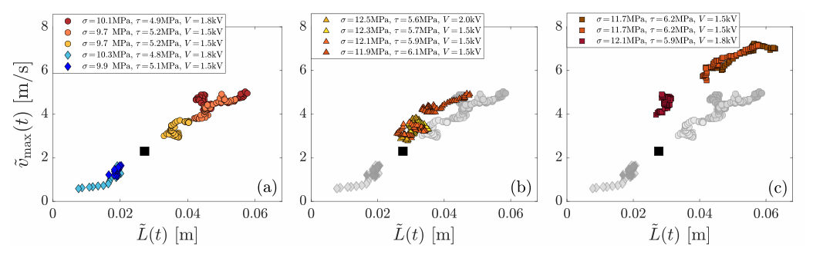
<figcaption class="paper-figure-caption"><b>Fig 3.</b> Fig. 3. Experimental validation of the theory. (a) Experimental results for ˜vmax(t) vs. ˜L(t) of 5 slip pulses obtained with σ =10±0.3 MPa, τ =5 ∓0.2 MPa and two values of the nucleation voltage V (see legend). Growing pulses (circles) appear in hot colors and decaying ones (diamonds) appear in cold colors, following the symbol and color codes of the theoretical Fig. 1c. The black square is an estimate of the location of the relevant steady-state point, separating decaying and growing pulses. See text for an extensive discussion of the experimental results and their relations to the theoretical predictions. (b) The same as (b), but for growing pulses obtained with σ = 12.2 ± 0.3 MPa, τ =...</figcaption>
</figure>
<figure class="paper-figure-card">
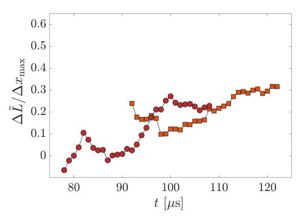
<figcaption class="paper-figure-caption"><b>Fig 4.</b> Fig. 4. The slow evolution of growing pulses. ∆˜L(t)/∆xmax(t) of two growing pulses presented in Fig. 3 (one from panel (a) and the other from panel (c) therein, using the same symbols and colors). The experimental results support the theoretical prediction in Eq. (4) through its integral corollary ∆˜L(t)/∆xmax(t) ≪1 (see text and Supplementary Materials), demonstrating the slow evolution of growing pulses (featured by all observed growing pulses). See text for additional discussion.</figcaption>
</figure>
</div>

<p><strong>Summary.</strong> This work experimentally validates a comprehensive theory describing slip pulses, which are key features of large natural earthquakes. By conducting lab experiments, the authors confirmed that the evolution of these pulses follows predicted slow, unsteady dynamics, demonstrating the theoretical attractor governing their size and peak slip rate. This provides major progress in understanding the physics of earthquake rupture.</p>
<p><strong>Why it may be interesting.</strong> While focused on geophysics, the underlying mathematical framework—analyzing the stability and evolution of localized, non-linear structures (pulses) governed by rate-dependent constitutive laws—shares mathematical parallels with modeling non-equilibrium dynamics in complex quantum systems or open quantum systems.</p>
<details>
<summary>Detailed structure</summary>
<p><strong>Main problem.</strong> The paper investigates the spatiotemporal dynamics of frictional rupture, specifically focusing on the behavior of 'slip pulses' which are considered a dominant rupture mode in natural earthquakes.</p>
<p><strong>Main result.</strong> Laboratory experiments successfully confirmed the theoretical predictions regarding the intrinsically slow, unsteady evolution of pulse-like earthquakes, including the predicted transition between decaying and slowly growing pulse regimes.</p>
<p><strong>Method.</strong> The study combines theoretical modeling based on rate-and-state friction laws with extensive laboratory earthquake experiments using controlled fault interfaces.</p>
<p><strong>Model / system.</strong> The physical system is a frictional interface (fault) between two elastic blocks. The dynamics are governed by a constitutive law incorporating prestresses and wave radiation, leading to the concept of self-healing slip pulses.</p>
<p><strong>Key observables.</strong> Pulse size L(t), peak slip rate v_max(t), and the dimensionless growth rate of the pulse.</p>
<p><strong>Important parameters / regimes.</strong> Prestress levels (sigma, tau), fault roughness amplitudes, and the time-dependent evolution parameters.</p>
<p><strong>Assumptions / limitations.</strong> The theory assumes that steady-state solutions are categorically unstable but form a dynamic attractor for the unsteady pulse evolution.</p>
<p><strong>Figures summary.</strong> Figures illustrate the experimental setup, profiles of slip pulses, and superpositions of measured v_max vs. L data points confirming the theoretical attractor line.</p>
<p><strong>Paper structure.</strong> The paper progresses from establishing the theoretical framework for slip pulses, detailing the experimental setup and measurement techniques (DIC), presenting the confirmation of the time-dependent dynamics, and finally demonstrating the predicted transition between pulse growth and decay.</p>
</details>
<details>
<summary>Abstract</summary>
<p>Large natural earthquakes are typically mediated by frictional pulse-like rupture, which features a finite slipping zone. Recently, a comprehensive two-dimensional theory of frictional slip pulses has been developed. It predicts that pulses are categorically unstable rupture modes, whose evolution is intrinsically slow. Unsteady pulses satisfy an equation of motion expressed in terms of discrete observables, which is inherently related to their steady-state counterparts. The theory also predicts a transition from decaying to slowly growing pulses. Here, we perform extensive lab earthquake experiments to test the theory. The experiments confirm the theoretical predictions for pulse-like lab earthquakes over a range of prestress levels, rupture nucleation conditions and small-scale fault roughness amplitudes. Specifically, the predicted time-dependent dynamics are tested in a plane defined by the evolving pulse size and peak slip rate, along with measurements of the dimensionless growth rate of pulses, demonstrating their intrinsically slow unsteady nature. The predicted transition between decaying and growing pulses is also experimentally demonstrated. These results constitute major progress in understanding a dominant earthquake rupture mode.</p>
</details>
<p><sub><a href="#top">↑ back to top</a></sub></p>

<p><a id="paper-2608.25684"></a></p>
<h3 id="chirality-selective-phonon-pumping-by-ferroelectric-dynamics"><a href="http://arxiv.org/abs/2608.25684v1">Chirality-Selective Phonon Pumping by Ferroelectric Dynamics</a></h3>
<p><strong>Authors:</strong> Dapeng Yao, Ping Tang<br>
<strong>Type:</strong> theory · <strong>Category:</strong> other · <strong>PDF:</strong> <a href="https://arxiv.org/pdf/2608.25684v1">https://arxiv.org/pdf/2608.25684v1</a><br>
<strong>Analysis basis:</strong> full PDF text, analyzed in chunks
<strong>Topic relevance:</strong> <code>Keldysh / 2PI / non-Gaussian methods</code> <strong>3/5</strong> · <code>analog quantum simulation</code> <strong>2/5</strong> · <code>driven-dissipative phase transition</code> <strong>2/5</strong> · <code>methods for driven-dissipative</code> <strong>2/5</strong> · <code>non-equilibrium universality</code> <strong>2/5</strong> · <code>correlated / nonlocal dissipation</code> <strong>1/5</strong> · <code>quantum measurements</code> <strong>1/5</strong></p>
<div class="figure-strip-hint">↔ Scroll figures horizontally</div>
<div class="paper-figures-scroll">
<figure class="paper-figure-card">

<figcaption class="paper-figure-caption"><b>Fig 1.</b> FIG. 1. (a) Schematic of chirality-selective phonon pump- ing in a ferroelectric|dielectric bilayer proposed in this Let- ter. The precessing electric polarization P(t) in the xy plane transfers its angular momentum with a definite chirality to the lattice via electrostrictive coupling, generating chiral phonons that propagate along the z direction in the dielectric with a net angular-momentum density polarized along the z axis. (b) Thermally induced chiral-phonon generation in chiral crystals via the phonon thermal Edelstein effect [42, 43]. A temper- ature gradient ∂zT applied along the screw (z) axis induces PAM polarized along the z direction. In both cases, the chiral phonons exhibit...</figcaption>
</figure>
<figure class="paper-figure-card">

<figcaption class="paper-figure-caption"><b>Fig 2.</b> FIG. 2. Spatial distribution and frequency dependence of the induced PAM density in the YAG layer. (a) Longitudinal component ⟨lz(z)⟩dc as a function of z/λT , induced by the in-plane polarization precession δP(t) shown in Fig. 1, and (b) transverse component ⟨lx(z)⟩dc as a function of z/λav, in- duced by the polarization precession δP′(t) in the yz plane, at different driving frequencies. The phonon relaxation time is fixed at τ = 300 ns. Frequency dependence of (c) the lon- gitudinal component ⟨lz⟩dc and (d) the transverse component ⟨lx⟩dc at the interface for different phonon relaxation times.</figcaption>
</figure>
</div>

<p><strong>Summary.</strong> This work proposes using the dynamic precession of electric polarization in a ferroelectric material to generate propagating, chirality-selective phonons in an adjacent ordinary dielectric. By coupling the polarization's intrinsic angular momentum to the lattice via electrostriction, the authors show this method is highly efficient and electrically tunable, opening a new route for programmable phononic devices.</p>
<p><strong>Why it may be interesting.</strong> While focused on condensed matter/solid-state physics, the concept of injecting angular momentum into a lattice via an external, controllable field (polarization) is analogous to driving non-equilibrium quantum systems or studying energy/momentum transfer in open quantum systems.</p>
<details>
<summary>Detailed structure</summary>
<p><strong>Main problem.</strong> The paper addresses the need for an efficient and controllable method to generate propagating chiral phonons in ordinary dielectric materials, overcoming limitations associated with naturally chiral crystals.</p>
<p><strong>Main result.</strong> It demonstrates that ferroelectric polarization precession can act as a powerful electrical source, pumping chirality-selective phonons with an efficiency significantly higher than thermal generation in common materials like LiNbO3|YAG.</p>
<p><strong>Method.</strong> The mechanism is derived theoretically by coupling the intrinsic angular momentum of the precessing electric polarization to the lattice vibrations via electrostrictive coupling.</p>
<p><strong>Model / system.</strong> The model considers a bilayer structure (Ferroelectric|Dielectric) and uses the elastic Lagrangian density incorporating an electrostrictive coupling term. The dynamics are solved using Green's function approaches.</p>
<p><strong>Key observables.</strong> Chirality-selective Phonon Angular Momentum (PAM) density ($\langle l(z) 
angle_{dc}$), which is the primary diagnostic for the pumped chirality.</p>
<p><strong>Important parameters / regimes.</strong> Polarization amplitude ($P_0, A$), frequency ($\omega$), and the strength of the electrostrictive coupling tensor components.</p>
<p><strong>Assumptions / limitations.</strong> The analysis assumes the existence of strong electrostrictive coupling and models the polarization dynamics using a monochromatic precession.</p>
<p><strong>Figures summary.</strong> Figure 1 schematically compares the proposed chiral-phonon pumping in a ferroelectric|dielectric bilayer against thermal generation in chiral crystals. Figure 2 shows the spatial and frequency dependence of the induced PAM density components.</p>
<p><strong>Paper structure.</strong> The paper establishes the physical problem, derives the governing equations based on electrostrictive coupling, calculates the pumped angular momentum density using Green's functions, and quantifies the pumping efficiency by comparing it to thermal limits.</p>
</details>
<details>
<summary>Abstract</summary>
<p>The discovery of chiral phonons has expanded the conventional view of lattice vibrations as passive heat carriers, opening new opportunities for phononic spintronic devices. However, their realization has been largely limited to chiral crystals or to specific regions of momentum space in certain achiral materials. Here, we propose a generic mechanism for generating propagating chiral phonons in an ordinary dielectric through the precession of the electric polarization in an adjacent ferroelectric. The polarization dynamics transfers its intrinsic angular momentum to the lattice via electrostrictive coupling, thereby pumping chirality-selective phonons whose handedness is dictated by that of the polarization precession. For a typical LiNbO$_{3}$$|$Y$_{3}$Al$_{5}$O$_{12}$ bilayer, we find that the pumping efficiency quantified by an interfacial convertance substantially exceeds those of thermally induced chiral-phonon generation in chiral crystals, owing to the strong electrostrictive coupling in ferroelectrics. Our work establishes ferroelectric dynamics as a versatile electrical source of chiral phonons and provides a general route toward electrically programmable chiral-phononic and spintronic functionalities.</p>
</details>
<p><sub><a href="#top">↑ back to top</a></sub></p>

<p><a id="paper-2608.25263"></a></p>
<h3 id="metastable-magnetic-domains-and-the-anomalous-math813math-resistance-peak-in-twisted-double-bilayer-graphene"><a href="http://arxiv.org/abs/2608.25263v1">Metastable magnetic domains and the anomalous $B_\parallel=0$ resistance peak in twisted double bilayer graphene</a></h3>
<p><strong>Authors:</strong> Zhenxiang Gao, Christopher Coleman, Silvia Folk, Ruiheng Su, Manabendra Kuiri, Kenji Watanabe, Takashi Taniguchi, Nemin Wei, Chunli Huang, Joshua Folk<br>
<strong>Type:</strong> experiment · <strong>Category:</strong> other · <strong>PDF:</strong> <a href="https://arxiv.org/pdf/2608.25263v1">https://arxiv.org/pdf/2608.25263v1</a><br>
<strong>Analysis basis:</strong> full PDF text, analyzed in chunks
<strong>Topic relevance:</strong> <code>non-equilibrium universality</code> <strong>3/5</strong> · <code>scars &amp; prethermalization</code> <strong>3/5</strong> · <code>analog quantum simulation</code> <strong>2/5</strong> · <code>quantum measurements</code> <strong>2/5</strong> · <code>Keldysh / 2PI / non-Gaussian methods</code> <strong>1/5</strong> · <code>driven-dissipative phase transition</code> <strong>1/5</strong> · <code>methods for driven-dissipative</code> <strong>1/5</strong></p>
<div class="figure-strip-hint">↔ Scroll figures horizontally</div>
<div class="paper-figures-scroll">
<figure class="paper-figure-card">

<figcaption class="paper-figure-caption"><b>Fig 1.</b> FIG. 1. a) Stacking configuration of the device. t2+2 consists of two Bernal (AB)-stacked bilayer graphene with a twist angle θ ∼1.34◦, Vtg is the gate voltage on a CrAu top gate; Vbg is the gate voltage applied to a graphite bottom gate. b) Optical image of the device showing measurement configuration. c) Hall bar geometry defining Bx and By as B∥components as well as Bz ≡B⊥. d) Longitudinal resistance Rxx across the halo region (100 mK). Yellow lines show Rxx(Bx) measurements at the ν, D locations specified by white crosses (25 mK). e) Reduced Hall filling |νH −ν| (see methods) extracted at |B⊥| = 0.5 T across the halo region, with markers at the three ν, D locations where data in panel...</figcaption>
</figure>
<figure class="paper-figure-card">

<figcaption class="paper-figure-caption"><b>Fig 2.</b> FIG. 2. a) Rxx(B∥) for five consecutive approaches to the AHE region via each of two gate-voltage trajectories α and β (inset), connecting the fully-degenerate metal (white cir- cle, {ν, D} = {0, 0}) to the quarter-metal region (black cir- cle, {3.46, −0.44}). Path α never yielded an Rxx(B∥) peak, whereas path β almost always did, with varying peak height. Approaches were carried out with zero current in the in-plane magnet coils, corresponding to a residual in-plane field of or- der 0.5 mT. b) Correlation between the average resistance Rxx (red markers) measured over 10 s after arrival via the β trajec- tory, and the peak height ∆Rxx ≡Rxx(B∥= 0) −Rxx(B∥= 10 mT) (purple markers) determined...</figcaption>
</figure>
<figure class="paper-figure-card">

<figcaption class="paper-figure-caption"><b>Fig 3.</b> FIG. 3. a) Rxx map of the tip of the halo region where the B∥= 0 MR peak is observed, with gate-driven trajectories γ (green) and δ (yellow) used for panels (b) and (d); starting and ending points are labelled in terms of {ν, D}. b) Rxx(ν) traces along γ at three values of Bx, with B⊥and By set to zero. Solid (dashed) lines indicate traces terminating in the large-peak (small-peak) state. (c) Reduced Hall filling, |νH −ν|, measured along the full range ν = 0 to 4 at constant D; the light blue shading highlights the portion corresponding to trajectory γ. (d) Terminal Rxx after ramping along δ in (a) for various ⃗B.</figcaption>
</figure>
</div>

<p><strong>Summary.</strong> This work investigates an anomalous resistance peak at zero in-plane magnetic field in twisted double bilayer graphene. The authors show this peak is highly sensitive to how the material reaches its electronic state, pointing to a mechanism rooted in the domain structure of orbital magnetism. They argue that spin, coupled to valley polarization via spin-orbit interaction, is the key degree of freedom governing this exotic transport signature.</p>
<p><strong>Why it may be interesting.</strong> The strong coupling between transport measurements and the history-dependent formation of magnetic domains touches upon non-equilibrium dynamics and emergent topological phenomena, which are relevant to understanding quantum state preparation in condensed matter systems.</p>
<details>
<summary>Detailed structure</summary>
<p><strong>Main problem.</strong> The paper investigates the microscopic origin of a sharp, metastable peak in longitudinal resistance ($R_{xx}$) observed precisely at zero in-plane magnetic field ($B_\parallel=0$) in twisted double bilayer graphene.</p>
<p><strong>Main result.</strong> The peak's existence and magnitude are highly sensitive to the history of gate-voltage sweeps and the applied magnetic field, strongly suggesting it is governed by the domain structure of orbital magnetism, which involves spin textures.</p>
<p><strong>Method.</strong> The study uses low-temperature transport measurements, mapping $R_{xx}$ and $R_{xy}$ as functions of gate voltages and applied in-plane magnetic fields, complemented by differential resistance measurements.</p>
<p><strong>Model / system.</strong> The physical system is twisted double bilayer graphene (t2+2) operating in a valley-polarized quarter-metal state. The physics involves moiré superlattices, orbital magnetism, and the interplay between valley, spin, and charge degrees of freedom.</p>
<p><strong>Key observables.</strong> Longitudinal resistance $R_{xx}(B_\parallel)$, anomalous Hall resistance $R_{xy}$, and differential resistance $  ext{dV}<em ext_DC="ext{DC">{xx}/   ext{dI}$ vs. bias current $ ext{I}</em>$.}</p>
<p><strong>Important parameters / regimes.</strong> Low temperatures (100-300 mK), in-plane magnetic field components ($B_x, B_y$), and the gate-voltage trajectory used to prepare the electronic state.</p>
<p><strong>Assumptions / limitations.</strong> The peak is attributed to metastable magnetic domain configurations, and the underlying physics involves spin-transfer torques acting on domain walls.</p>
<p><strong>Figures summary.</strong> Figures illustrate $R_{xx}(B_\parallel)$ scans showing the $B_\parallel=0$ peak, demonstrating its dependence on the approach path (gate voltage trajectory) and its robustness against out-of-plane fields ($B_z$).</p>
<p><strong>Paper structure.</strong> The paper systematically maps the resistance landscape by varying gate voltages and magnetic fields, establishing the dependence of the $B_\parallel=0$ peak on the preparation history, and finally proposing a mechanism involving spin-transfer torques at domain walls.</p>
</details>
<details>
<summary>Abstract</summary>
<p>In graphene moirés, valley polarization gives rise to orbital magnetism, manifested as an anomalous Hall effect and resulting in Barkhausen jumps in longitudinal resistance when changing domain configurations modify quasiparticle scattering. Beyond a simple picture of polarized domains, however, spin and valley textures within and between the domains are less well understood, as is the effect of these textures on transport. In the valley-polarized quarter-metal state of twisted double bilayer graphene, a sharp and metastable peak in longitudinal resistance often appears at zero in-plane magnetic field, whose microscopic origin has yet to be identified. Here, we show that this peak depends on the configuration of domains of orbital magnetism, which is itself set by the gate-voltage trajectory used to enter the ordered state and by the magnetic field --- particularly the in-plane component --- present during that trajectory. The sensitivity of the effect to in-plane magnetic field components points to spin, linked to valley polarization through spin-orbit coupling, as the key degree of freedom in both the domain formation and the resistance peak.</p>
</details>
<p><sub><a href="#top">↑ back to top</a></sub></p>

<p><a id="paper-2608.25002"></a></p>
<h3 id="photonic-spin-hall-effect-as-a-probe-for-time-reversal-symmetry-broken-band-topological-phases"><a href="http://arxiv.org/abs/2608.25002v1">Photonic spin-Hall effect as a probe for time-reversal-symmetry broken band topological phases</a></h3>
<p><strong>Authors:</strong> Deblina Samanta, Darshan G. Joshi<br>
<strong>Type:</strong> theory · <strong>Category:</strong> other · <strong>PDF:</strong> <a href="https://arxiv.org/pdf/2608.25002v1">https://arxiv.org/pdf/2608.25002v1</a><br>
<strong>Analysis basis:</strong> full PDF text, analyzed in chunks
<strong>Topic relevance:</strong> <code>analog quantum simulation</code> <strong>3/5</strong> · <code>interference shaping light</code> <strong>2/5</strong> · <code>quantum optics experiment</code> <strong>2/5</strong> · <code>Keldysh / 2PI / non-Gaussian methods</code> <strong>1/5</strong> · <code>quantum measurements</code> <strong>1/5</strong></p>
<div class="figure-strip-hint">↔ Scroll figures horizontally</div>
<div class="paper-figures-scroll">
<figure class="paper-figure-card">

<figcaption class="paper-figure-caption"><b>Fig 1.</b> FIG. 1. Schematic of the photonic spin-Hall effect where an incident Gaussian wavepacket of light polarized in the H plane (here x−z plane) upon reflection splits into two beams of op- posite circular polarizations that are spatially separated along the y axis, denoted by ∆H ±.</figcaption>
</figure>
<figure class="paper-figure-card">

<figcaption class="paper-figure-caption"><b>Fig 2.</b> FIG. 2. Centroid shift in the Chern insulator and trivial phases. (a) M = 0.1eV , ϕ = π/2 with C = 1. (b) M = 0.1eV , ϕ = −π/2 with C = −1. (c) M = 0.3eV , ϕ = π/2 with C = 0.</figcaption>
</figure>
<figure class="paper-figure-card">

<figcaption class="paper-figure-caption"><b>Fig 3.</b> FIG. 3. (a) Centroid shift in the WSM phase with the incident plane being the x −y plane. (b) Centroid Shift in x −y plane for QAH phase. (c) Centroid Shift in x −y plane for NI phase. Centroid shifts in the x −z and y −z planes are zero for all the phases. For plots (b) and (c), we have set |α| = 0.3 eV, |β| = 0.5a2/2 eV˚A2 with a = 2˚A. Here Ec is the high-energy cut-off.</figcaption>
</figure>
</div>

<p><strong>Summary.</strong> This work proposes using the Photonic Spin-Hall Effect (PSHE) as a novel, non-invasive method to detect topological phases in materials. By measuring the frequency-dependent centroid shift of reflected light, the authors show that the resulting signature uniquely reveals whether the system possesses a time-reversal-symmetry broken topological band structure. This provides a powerful optical diagnostic tool for condensed matter physics.</p>
<p><strong>Why it may be interesting.</strong> The use of light polarization and reflection geometry (photonic setup) to probe bulk topological invariants ($\sigma_{xy}$) is a powerful, non-invasive technique relevant to quantum optics and condensed matter theory.</p>
<details>
<summary>Detailed structure</summary>
<p><strong>Main problem.</strong> To find an unambiguous and non-invasive probe to detect time-reversal-symmetry broken band topological phases.</p>
<p><strong>Main result.</strong> The frequency dependence of the photonic spin-Hall effect's centroid shift ($\Delta_c$) exhibits a unique sign structure that allows for the unambiguous distinction between topological and trivial band phases.</p>
<p><strong>Method.</strong> The analysis relates the measurable centroid shift ($\Delta_c$) to the optical Hall conductivity ($\sigma_{xy}$) using Fresnel reflection coefficients derived from the Kubo-Greenwood formula.</p>
<p><strong>Model / system.</strong> The study applies to various topological systems, including 2D Chern insulators (Haldane model), 3D Weyl semimetals (WSM), and Quantum Anomalous Hall (QAH) insulators.</p>
<p><strong>Key observables.</strong> The centroid shift ($\Delta_c$), which is the intensity-weighted average of the right and left circularly polarized beam shifts, and the optical Hall conductivity ($\sigma_{xy}(\omega)$).</p>
<p><strong>Important parameters / regimes.</strong> Frequency ($\omega$), incident angle ($  heta_i$), and topological invariants like the Chern number ($C$).</p>
<p><strong>Assumptions / limitations.</strong> The analysis assumes the PSHE shift is directly proportional to the optical Hall conductivity, and that the measurement can probe the frequency dependence of this conductivity.</p>
<p><strong>Figures summary.</strong> Figures illustrate the PSHE splitting ($\Delta H_\pm$) and the frequency dependence of the centroid shift ($\Delta_c$) for various phases (Chern, WSM, QAH, NI), showing distinct sign patterns.</p>
<p><strong>Paper structure.</strong> The paper establishes the PSHE as a diagnostic tool, derives the relationship between the centroid shift and optical Hall conductivity, and then applies this formalism to model Hamiltonians for Chern insulators, WSM, and QAH phases to demonstrate the unique sign signatures.</p>
</details>
<details>
<summary>Abstract</summary>
<p>When a plane polarized Gaussian beam of light is incident on a surface, upon reflection it splits into right and left circularly polarized beams that are spatially separated in the direction perpendicular to the plane of incidence. This is known as the photonic spin-Hall effect (PSHE). In this work, we show that the centroid shift, which is the intensity weighted average of the shifts of the right and the left circularly polarized beams directly probes the optical Hall conductivity, which carries the essential information about the topological properties of the system. We show that the centroid shift as a function of the frequency of light has a unique sign structure depending on whether the system is in a time-reversal symmetry broken band topological phase or a trivial phase. Thus, the PSHE may serve as an unambiguous and a non-invasive probe to detect time-reversal symmetry broken band topological phases.</p>
</details>
<p><sub><a href="#top">↑ back to top</a></sub></p>

<p><a id="paper-2608.25268"></a></p>
<h3 id="grain-boundary-engineering-effect-on-vortex-matter-in-superconducting-films"><a href="http://arxiv.org/abs/2608.25268v1">Grain Boundary Engineering Effect on Vortex Matter in Superconducting Films</a></h3>
<p><strong>Authors:</strong> Qun Wang, Ting Chen, Ya-Xun He, Xing-Jian Liu, Jian-Wen Sun, Kang-Hong Yin, Fang-Ting Lin, Shi-Xun Cao, Jun-Yi Ge<br>
<strong>Type:</strong> experiment · <strong>Category:</strong> other · <strong>PDF:</strong> <a href="https://arxiv.org/pdf/2608.25268v1">https://arxiv.org/pdf/2608.25268v1</a><br>
<strong>Analysis basis:</strong> full PDF text, analyzed in chunks
<strong>Topic relevance:</strong> <code>analog quantum simulation</code> <strong>3/5</strong> · <code>Frenkel-Kontorova</code> <strong>1/5</strong> · <code>driven-dissipative phase transition</code> <strong>1/5</strong> · <code>non-equilibrium universality</code> <strong>1/5</strong></p>
<div class="figure-strip-hint">↔ Scroll figures horizontally</div>
<div class="paper-figures-scroll">
<figure class="paper-figure-card">

<figcaption class="paper-figure-caption"><b>Fig 1.</b> Figure 1: Structural and transport characterization of NbTiN films with different grain- orientation distributions and GB connectivity. (a,b) XRD patterns of the 5 and 7 mTorr films, respectively. The 5 mTorr film shows comparable (111) and (200) reflections, whereas the 7 mTorr film exhibits a pronounced (111) texture. These texture differences are associated with the distinct effective GB coupling states identified by transport. Insets schematically illustrate the orientation distributions and corresponding GB networks. (c,e) H–T resistance maps of the 5 and 7 mTorr films. Dashed lines mark the characteristic transition boundaries; Tci and Tcj are distinguished for the 5 mTorr film,...</figcaption>
</figure>
<figure class="paper-figure-card">

<figcaption class="paper-figure-caption"><b>Fig 2.</b> Figure 2: Magnetic properties and vortex-pinning response of the NbTiN films. (a,b) Isothermal M–H loops of the 5 and 7 mTorr films. (c,d) Field dependence of Jc, calculated from the hysteresis loops using the extended Bean model. (e) Normalized pinning force fp = Fp/Fp,max as a function of reduced field h = H/Hirr; solid curves are two-component Dew–Hughes fits. (f) Temperature dependence of the single-vortex-to-small-bundle crossover field Bsb; solid curves are fits to the collective-pinning expression.</figcaption>
</figure>
<figure class="paper-figure-card">

<figcaption class="paper-figure-caption"><b>Fig 3.</b> Figure 3: Real-space vortex configurations and corresponding Delaunay triangulations. MFM phase images and triangulations for (a) the 5 mTorr and (b) the 7 mTorr films. Bright features represent individual vortices according to the selected MFM phase contrast. Images were acquired at 1.7 K after field cooling in 10–80 Oe. For each field, the Delaunay triangulation obtained from the extracted vortex positions is shown below the MFM image. Yellow circles denote sixfold-coordinated vortices and gray circles denote other coordination numbers. Scale bars: 5 µm.</figcaption>
</figure>
<figure class="paper-figure-card">

<figcaption class="paper-figure-caption"><b>Fig 4.</b> Figure 4(e) compares dcenter with the ideal square-lattice spacing asq = (Φ0/B)1/2 and the ideal triangular-</figcaption>
</figure>
<figure class="paper-figure-card">

<figcaption class="paper-figure-caption"><b>Fig 5.</b> Figure 4: Quantitative comparison of vortex ordering. (a,b) Nearest-neighbor distance distributions at different fields for the 5 and 7 mTorr films; solid curves are Gaussian fits. (c,d) Delaunay bond-angle distributions at 80 Oe. Colored curves are Gaussian components centered at 45°, 60°, and 90°, and the dashed curve is their sum. (e) Field dependence of dcenter, compared with the theoretical intervortex spacings for ideal square and triangular lattices. Bars indicate the fitted distribution widths at 90% of the corresponding peak maxima and are not statistical uncertainties. (f) Fraction of sixfold-coordinated vortices. (g) Pair- correlation functions g(r) at 80 Oe, plotted against...</figcaption>
</figure>
</div>

<p><strong>Summary.</strong> This work demonstrates that controlling grain boundary connectivity in superconducting films via deposition pressure fundamentally alters vortex matter. By comparing films with poor vs. improved GB coupling, the authors link macroscopic transport signatures (like resistive transitions) to microscopic vortex organization, providing a practical method to engineer vortex pinning for superconducting devices.</p>
<p><strong>Why it may be interesting.</strong> While focused on superconductivity, the methodology of using a continuous tuning parameter (sputtering pressure) to control the connectivity of weak links and observing the resulting change in collective, ordered states (vortex lattice) is analogous to tuning disorder or coupling strength in many-body quantum systems.</p>
<details>
<summary>Detailed structure</summary>
<p><strong>Main problem.</strong> The study aims to determine how tuning the connectivity of grain boundaries (GBs) in superconducting films reorganizes the vortex matter in real space, bridging the gap between macroscopic transport and microscopic vortex structure.</p>
<p><strong>Main result.</strong> Increasing the sputtering pressure from 5 mTorr to 7 mTorr improves GB coupling, leading to a single-step resistive transition, higher critical current density, and a more uniform, locally ordered vortex distribution.</p>
<p><strong>Method.</strong> The researchers used reactive magnetron sputtering to create polycrystalline NbTiN films, varying the sputtering pressure to control GB coupling, and characterized the films using electrical transport measurements, magnetic force microscopy (MFM), and quantitative vortex ordering analysis.</p>
<p><strong>Model / system.</strong> The physical system is polycrystalline NbTiN superconducting thin films. The key variable is the sputtering pressure, which controls the effective coupling strength of the grain boundaries, influencing the superconducting state and vortex pinning landscape.</p>
<p><strong>Key observables.</strong> Resistive transition steps (two-step vs. single-step), critical current density ($J_c$), second magnetization peak (SMP), vortex spatial distribution (cluster-like vs. uniform), and quantitative vortex ordering metrics ($\psi_6$, bond angles).</p>
<p><strong>Important parameters / regimes.</strong> Sputtering pressure (5 mTorr vs. 7 mTorr), magnetic field ($H$), temperature ($T$), and the resulting GB coupling strength.</p>
<p><strong>Assumptions / limitations.</strong> The analysis relies on the London vortex-line approximation for calculating local forces and assumes that the measured transport properties are sensitive to the degree of GB connectivity.</p>
<p><strong>Figures summary.</strong> Figures compare XRD patterns showing texture changes, R-T curves illustrating the transition steps, and MFM images contrasting the heterogeneous, cluster-like vortices in the 5 mTorr film versus the uniform, ordered vortices in the 7 mTorr film.</p>
<p><strong>Paper structure.</strong> The paper systematically compares two film conditions (5 mTorr vs. 7 mTorr) by analyzing transport signatures (resistive transitions, $J_c$), magnetic response (SMP), and finally, performing detailed real-space and quantitative analysis of the resulting vortex lattice structure.</p>
</details>
<details>
<summary>Abstract</summary>
<p>Grain boundaries (GBs) in polycrystalline superconducting films act as a double-edged sword: they can pin vortices or degrade superconductivity through Josephson-like weak-link coupling. Here, we demonstrate that sputtering pressure tunes GB coupling in NbTiN films and visualize its consequences for vortex matter. The 5 mTorr film exhibits dispersed grain orientations and a two-step resistive transition under field, signaling intergranular weak-link behavior. In contrast, the 7 mTorr film develops a (111) texture, a single-step transition, higher critical current density, a second magnetization peak, and a δl-type pinning response consistent with improved GB coupling. Cryogenic magnetic force microscopy reveals a spatially heterogeneous, cluster-like vortex configuration in the 5 mTorr film, whereas the 7 mTorr film hosts a more uniform distribution with enhanced local order. These results establish a connection between deposition-controlled GB connectivity, macroscopic weak-link transport, and microscopic vortex organization, providing a practical route to tailor vortex pinning in polycrystalline superconducting films.</p>
</details>
<p><sub><a href="#top">↑ back to top</a></sub></p>

<p><a id="paper-2608.25951"></a></p>
<h3 id="landau-theory-for-commensurate-charge-density-waves-coupled-to-uniform-lattice-deformation"><a href="http://arxiv.org/abs/2608.25951v1">Landau Theory for Commensurate Charge-Density Waves Coupled to Uniform Lattice Deformation</a></h3>
<p><strong>Authors:</strong> Keiji Nakatsugawa, Toshiyuki Fujii, Satoshi Tanda<br>
<strong>Type:</strong> theory · <strong>Category:</strong> other · <strong>PDF:</strong> <a href="https://arxiv.org/pdf/2608.25951v1">https://arxiv.org/pdf/2608.25951v1</a><br>
<strong>Analysis basis:</strong> full PDF text, analyzed in chunks
<strong>Topic relevance:</strong> <code>Frenkel-Kontorova</code> <strong>3/5</strong> · <code>Keldysh / 2PI / non-Gaussian methods</code> <strong>1/5</strong> · <code>analog quantum simulation</code> <strong>1/5</strong> · <code>driven-dissipative phase transition</code> <strong>1/5</strong></p>
<div class="figure-strip-hint">↔ Scroll figures horizontally</div>
<div class="paper-figures-scroll">
<figure class="paper-figure-card">

<figcaption class="paper-figure-caption"><b>Fig 1.</b> FIG. 1. Strain free energy density fε = κCDW</figcaption>
</figure>
<figure class="paper-figure-card">

<figcaption class="paper-figure-caption"><b>Fig 2.</b> FIG. 2. Temperature dependence of the commensurate state for different lattice stiffnesses κ. (a), (d) Comparison of the incommensurate amplitude ∆IC and the commensurate amplitude ∆C for different values of κ. In the rigid lattice limit κ →∞ the incommensurate–commensurate phase transition occurs at a temperature T &lt; TIC. In the soft lattice limit κ →0 the energy is minimized by deforming the lattice such that “the lattice is commensurate with the incommensurate CDW wavelength”. For a finite κ the incommensurate–commensurate phase transition still occurs, but at a higher temperature. (b), (e) The strain ε increases as ∆C develops and saturates at the geometric bound ε →1 −r, equal to −0.06...</figcaption>
</figure>
</div>

<p><strong>Summary.</strong> This work formulates a Landau theory for CDWs coupled to a deformable lattice, addressing the limitations of treating the lattice as rigid. It shows that the CDW and lattice share the geometric mismatch proportionally based on their relative stiffnesses. The results provide a unified picture of commensurate lock-in, suggesting that lattice elasticity is a crucial, often overlooked, degree of freedom in density-wave systems.</p>
<p><strong>Why it may be interesting.</strong> While focused on CDWs, the methodology of coupling an order parameter to a mechanical degree of freedom (strain) and analyzing the resulting phase transition/locking mechanism is highly relevant to understanding coupling effects in quantum many-body systems.</p>
<details>
<summary>Detailed structure</summary>
<p><strong>Main problem.</strong> The paper develops a minimal Landau theory to describe Charge-Density Waves (CDWs) whose commensurability is defined relative to a lattice that can undergo uniform deformation.</p>
<p><strong>Main result.</strong> The theory successfully interpolates between rigid and soft lattice limits, showing that the lattice strain and CDW amplitude are coupled, leading to a feedback mechanism that stabilizes the commensurate state.</p>
<p><strong>Method.</strong> The authors minimize the coupled free energy density with respect to the CDW order parameter and the lattice strain, deriving equilibrium conditions based on stiffness ratios.</p>
<p><strong>Model / system.</strong> The model describes a CDW coupled to a lattice strain ($\varepsilon$), motivated by observations in single-chain $    ext{NbS}_3$ where a commensurate CDW is accompanied by lattice shrinkage.</p>
<p><strong>Key observables.</strong> Equilibrium lattice strain ($\varepsilon$), CDW amplitude ($\Delta_C$), and the resulting wave number mismatch.</p>
<p><strong>Important parameters / regimes.</strong> Stiffness ratio ($S = \kappa/\kappa_{CDW}$), geometric misfit ratio ($r = Q_{IC}/Q_{C0}$), and the commensurability number ($N$).</p>
<p><strong>Assumptions / limitations.</strong> The analysis uses a single-mode ansatz for the CDW, excluding discommensurations, and assumes the lattice deformation is uniform.</p>
<p><strong>Figures summary.</strong> Figures illustrate the strain free energy density dependence on strain ($\epsilon$) for different misfit ratios ($r$) and stiffness ratios ($S$), and show the temperature evolution of CDW amplitude and strain in the soft limit.</p>
<p><strong>Paper structure.</strong> The paper establishes the coupled free energy functional, analyzes the limiting cases (rigid vs. soft lattice), derives the equilibrium strain and CDW amplitude, and discusses the implications for existing lock-in theories.</p>
</details>
<details>
<summary>Abstract</summary>
<p>We formulate a minimal Landau theory for a charge-density wave (CDW) whose commensurability is defined with respect to a deformed lattice. The motivation is provided by recent observations on an isolated single NbS$_3$ chain, which exhibits a commensurate CDW state accompanied by a $6\%$ shrinkage of the lattice constant. A uniform stretch $a_0\to a_0(1+\varepsilon)$ changes the reciprocal lattice wave number to $G(\varepsilon)=G_0/(1+\varepsilon)$, so that an $N$-fold commensurate CDW has the wave number $Q_\mathrm{C}(\varepsilon)=G(\varepsilon)/N$, whereas the wave number $Q_\mathrm{IC}$ favored by the incommensurate instability remains fixed. We propose an amplitude-strain free energy for both $N=3$ and $N=4$, in which the CDW induces a finite uniform strain by relieving the mismatch between $Q_\mathrm{C}(\varepsilon)$ and $Q_\mathrm{IC}$. The mismatch is shared between the CDW and the lattice in a proportion set by their stiffness ratio; since the CDW stiffness grows with the CDW amplitude, the lattice takes up an increasing share of the mismatch as the CDW develops. Our results suggest a reexamination of lock-in theories and of strain-tuning experiments on density-wave systems.</p>
</details>
<p><sub><a href="#top">↑ back to top</a></sub></p>

<p><a id="paper-2608.25875"></a></p>
<h3 id="topological-phases-of-a-generalised-tripartite-haldane-model"><a href="http://arxiv.org/abs/2608.25875v1">Topological phases of a generalised tripartite Haldane model</a></h3>
<p><strong>Authors:</strong> Ahmed Al-kharusi, Alessandro Principi, Niels R. Walet<br>
<strong>Type:</strong> theory · <strong>Category:</strong> other · <strong>PDF:</strong> <a href="https://arxiv.org/pdf/2608.25875v1">https://arxiv.org/pdf/2608.25875v1</a><br>
<strong>Analysis basis:</strong> full PDF text, analyzed in chunks
<strong>Topic relevance:</strong> <code>analog quantum simulation</code> <strong>3/5</strong></p>
<div class="figure-strip-hint">↔ Scroll figures horizontally</div>
<div class="paper-figures-scroll">
<figure class="paper-figure-card">

<figcaption class="paper-figure-caption"><b>Fig 1.</b> FIG. 1. A graphical representation of the generalised tripartite Haldane model. The sign of the phase of the nearest-neighbour hopping t1e±iθ is positive if the hopping is in the direction of the black arrows, and negative otherwise. Similarly, the dotted arrows show the sign of the phase in the next-nearest-neighbour hopping t2e±iϕ. The dotted lines are coloured in blue and red to easily distinguish between the clockwise and the anticlockwise directions. The magenta lines show the primitive unit cell, which contains six atoms numbered 1 to 6. The graphene unit cells are coloured according to the net magnetic flux. We use light yellow and light green for Φnet = Φ or −Φ, respectively, while...</figcaption>
</figure>
<figure class="paper-figure-card">

<figcaption class="paper-figure-caption"><b>Fig 2.</b> FIG. 2. The energy bands of the generalised Haldane model for t2/t1 = 4/10, θ = π/12 and ϕ = π/15. There is no actual band crossing in this plot, but the apparent crossing that can be seen shows the narrowness of the band gaps. The inset shows the path taken through the BZ connecting the high symmetry points.</figcaption>
</figure>
<figure class="paper-figure-card">

<figcaption class="paper-figure-caption"><b>Fig 3.</b> FIG. 3. (a) The topological phase diagrams of the upper three bands of the generalised Haldane model, where n is the band index. The bands are numbered from highest energy value to lowest energy value such that n = 1 is the uppermost energy band, and n = 6 is the lowermost energy band. The phase diagrams show the Chern number as a function of the phases θ and ϕ, where t2/t1 = 4/10. The numerical calculations were done only for ϕ ∈[0, π], and the other halves of the phase diagrams, namely for ϕ ∈[−π, 0) were generated by symmetry as explained in the main text. Calculation were performed on a grid of (θ, ϕ) values of size Nθ × Nϕ = 161 × 321. Each point is then coloured by its Chern number,...</figcaption>
</figure>
<figure class="paper-figure-card">

<figcaption class="paper-figure-caption"><b>Fig 4.</b> FIG. 5. An example of a merger between two different types of crossings. (a) a zoomed-in plot of the topological phase diagram of the third energy band; colour coding as in Fig. 3. In the light brown area, the Chern number is equal to −7. Markers are plotted in (a) along two different crossing lines. The dark green line (see Fig. 3(c)) is associated with a crossing at k−, while the other line is associated with three crossings {ki}, away from the high symmetry point. (b) Plots of −ln(E2 −E3) for the two crossing lines in the vicinity of k−. Each peak in (b) indicates a crossing between E2 and E3. The radii of the plots in (b) are equal to k/a = 0.3. See main text for discussion.</figcaption>
</figure>
<figure class="paper-figure-card">

<figcaption class="paper-figure-caption"><b>Fig 5.</b> FIG. 4. Examples of lines in the phase diagrams where the second and third energy bands cross at a set of points {ki}, where none of {ki} is a high symmetry point. (a) A zoomed-in region of the topological phase diagram of the third band; colour coding as in Fig. 3. Markers are plotted along two different separatrices in the phase diagram, and each marker in a) corresponds to the plot with the same marker in b) and c). The plots in (b) and (c) show −ln(E2 −E3) in the vicinity of γ in the BZ. Thus, each peak indicates a crossing between the second and third energy bands. The radius of the disks inside the red rectangles in (b) and (c) is k/a = 0.3, while the radius of the other plots in (b)...</figcaption>
</figure>
</div>

<p><strong>Summary.</strong> This work analyzes the topological properties of a generalized tripartite Haldane model using a tight-binding Hamiltonian. By calculating the Chern number across a complex phase diagram, the authors demonstrate that the model supports much larger topological invariants than simpler analogues. The analysis relies heavily on identifying and characterizing the energy band crossings that define the phase boundaries.</p>
<p><strong>Why it may be interesting.</strong> The study of topological phases in lattice models, especially those involving complex hopping parameters and emergent loop currents, provides deep insights into the robustness of quantum states against perturbations, which is fundamental to topological quantum computing concepts.</p>
<details>
<summary>Detailed structure</summary>
<p><strong>Main problem.</strong> The paper investigates the topological phase diagram of a generalized tripartite Haldane model defined on a hexagonal lattice.</p>
<p><strong>Main result.</strong> The model exhibits a highly complex topological phase diagram, with Chern numbers reaching absolute values as large as 7, significantly exceeding the simple values found in the original Haldane model.</p>
<p><strong>Method.</strong> Topological invariants (Chern numbers) are calculated by integrating the Berry curvature over the Brillouin zone, supported by analytical derivations of energy band crossings at high-symmetry points.</p>
<p><strong>Model / system.</strong> The system is described by a tight-binding Hamiltonian on a hexagonal lattice, forming a tripartite unit cell. The Hamiltonian incorporates complex nearest and next-nearest neighbor hopping parameters, and the analysis is based on diagonalizing a $6 	imes 6$ matrix.</p>
<p><strong>Key observables.</strong> Chern number (C), energy bands ($E_n$), and the Berry curvature ($\Omega_n(k)$).</p>
<p><strong>Important parameters / regimes.</strong> Phases of hopping parameters ($ heta, \phi$), and the ratio of hopping parameter magnitudes ($t_2/t_1$).</p>
<p><strong>Assumptions / limitations.</strong> The Chern number calculation requires the energy band of interest to be well separated from other bands ($\Delta E \geq 10^{-4}t_1$).</p>
<p><strong>Figures summary.</strong> Figures illustrate the model structure, the topological phase diagrams showing Chern numbers vs. parameter phases, and plots detailing energy band crossings both at high-symmetry points and away from them.</p>
<p><strong>Paper structure.</strong> The paper first introduces the model and its Hamiltonian, then details the numerical and analytical methods for calculating the Chern number. It systematically analyzes the phase diagram by deriving explicit analytical expressions for band crossings at high-symmetry points ($\gamma, k_\pm, k'_\pm$), which dictate the phase transitions.</p>
</details>
<details>
<summary>Abstract</summary>
<p>We present a generalised tripartite Haldane model with a complex nearest neighbour hopping parameter. The total magnetic flux through the primitive unit cell, which consists of three hexagonal unit cells is zero, and thus the model has the structure of a loop-current model. We calculate topological phase diagrams of the Chern numbers as a function of the phases of the nearest and next-nearest neighbour hopping parameters for a fixed ratio of the magnitude of the hopping parameters. We show that, unlike the Haldane model, the topological phase diagram of this model is very complex, but some aspects can still be dealt with analytically. Furthermore, the Chern numbers of the topological phases are as large as $7$ in absolute value. The analysis is supported by explicit expressions for energy bands crossing at high symmetry points in the Brillouin zone, which show as linear phase boundaries in the phase diagram. We show that such lines explain many features in the topological phase diagrams. Finally, we analyse a few representative examples of the nature of level crossings away from high symmetry and their evolution with model parameters.</p>
</details>
<p><sub><a href="#top">↑ back to top</a></sub></p>

<p><a id="paper-2608.25121"></a></p>
<h3 id="carrier-resolved-attosecond-valley-polarimetry-of-monolayer-mosmath867math"><a href="http://arxiv.org/abs/2608.25121v1">Carrier-Resolved Attosecond Valley Polarimetry of Monolayer MoS$_2$</a></h3>
<p><strong>Authors:</strong> Navdeep Rana, Lun Yue, Mette B. Gaarde<br>
<strong>Type:</strong> both · <strong>Category:</strong> other · <strong>PDF:</strong> <a href="https://arxiv.org/pdf/2608.25121v1">https://arxiv.org/pdf/2608.25121v1</a><br>
<strong>Analysis basis:</strong> full PDF text, analyzed in chunks
<strong>Topic relevance:</strong> <code>Keldysh / 2PI / non-Gaussian methods</code> <strong>2/5</strong> · <code>methods for driven-dissipative</code> <strong>2/5</strong> · <code>quantum measurements</code> <strong>2/5</strong> · <code>analog quantum simulation</code> <strong>1/5</strong> · <code>correlated / nonlocal dissipation</code> <strong>1/5</strong> · <code>driven-dissipative phase transition</code> <strong>1/5</strong> · <code>non-equilibrium universality</code> <strong>1/5</strong></p>
<div class="figure-strip-hint">↔ Scroll figures horizontally</div>
<div class="paper-figures-scroll">
<figure class="paper-figure-card">

<figcaption class="paper-figure-caption"><b>Fig 1.</b> FIG. 1. Core-level valley readout in monolayer MoS2. (a) Readout scheme for a σ+ pump at K.</figcaption>
</figure>
<figure class="paper-figure-card">

<figcaption class="paper-figure-caption"><b>Fig 2.</b> FIG. 2. Two-channel, carrier-resolved readout. (a),(b) Transient absorption ∆µ±(ω, τ) for σ+ and</figcaption>
</figure>
<figure class="paper-figure-card">

<figcaption class="paper-figure-caption"><b>Fig 3.</b> FIG. 3. Attosecond readout of valley-polarization buildup (σ+ pump). Before the pump, the hole</figcaption>
</figure>
<figure class="paper-figure-card">

<figcaption class="paper-figure-caption"><b>Fig 4.</b> Figure 3 shows the hole-line CD as a function of pump–probe delay (left axis), together</figcaption>
</figure>
<figure class="paper-figure-card">

<figcaption class="paper-figure-caption"><b>Fig 5.</b> FIG. 4. The valley polarimeter. Scanning the pump polarization from σ−through linear polariza-</figcaption>
</figure>
</div>

<p><strong>Summary.</strong> This work demonstrates that attosecond transient absorption spectroscopy can serve as a quantitative, carrier-resolved polarimeter for measuring valley polarization in monolayer MoS2. By analyzing the circular dichroism at the Mo 4p core edge, the authors can track the creation and evolution of valley polarization in real time, providing a powerful tool for ultrafast valleytronics research.</p>
<p><strong>Why it may be interesting.</strong> The methodology of using core-level transitions to create a highly sensitive, background-free, and carrier-resolved probe for non-equilibrium quantum states (valley polarization) is highly relevant to open quantum systems and quantum optics.</p>
<details>
<summary>Detailed structure</summary>
<p><strong>Main problem.</strong> The core challenge is developing a method to read out valley polarization (VP) in 2D semiconductors on the same ultrafast timescale (attosecond) that it can be written or switched.</p>
<p><strong>Main result.</strong> Attosecond transient absorption spectroscopy (ATA) successfully functions as a carrier-sensitive, quantitative polarimeter, allowing the real-time tracking of valley polarization buildup and dynamics.</p>
<p><strong>Method.</strong> The study combines theoretical simulations using semiconductor Bloch equations with the concept of attosecond core-level dichroism measurements.</p>
<p><strong>Model / system.</strong> The system is monolayer MoS2, a 2D semiconductor whose valley pseudospin is probed using the Mo 4p semicore edge. The theory employs a tight-binding model solved via semiconductor Bloch equations.</p>
<p><strong>Key observables.</strong> Circular Dichroism (CD) of the transient absorption spectrum ($\Delta\mu_{\pm}$), which is shown to be linearly proportional to the valley polarization (VP).</p>
<p><strong>Important parameters / regimes.</strong> Attosecond probe delay (time resolution), pump helicity ($\sigma^\pm$), and the energy separation between hole ($\approx 35.0 	ext{ eV}$) and electron ($\approx 38.5 	ext{ eV}$) transitions.</p>
<p><strong>Assumptions / limitations.</strong> The simulation assumes the core semicore level is localized on Mo atoms and neglects population relaxation, though the symmetry rules are robust.</p>
<p><strong>Figures summary.</strong> Figures illustrate the readout scheme, showing how $\sigma^+$ and $\sigma^-$ probes yield different signals, and demonstrate the time evolution of the hole-line CD tracking the valley population buildup.</p>
<p><strong>Paper structure.</strong> The paper establishes the need for ultrafast readout, details the use of ATA and core-level transitions to separate electron/hole signals, presents the quantitative relationship between CD and VP, and finally demonstrates time-resolved tracking of the valley dynamics.</p>
</details>
<details>
<summary>Abstract</summary>
<p>In recent years, all-optical writing and switching of valley polarization in two-dimensional semiconductors has been demonstrated on femtosecond timescales. Reading this polarization out on the same timescale, carrier by carrier, has so far remained out of reach. Employing semiconductor Bloch equation simulations of monolayer MoS$_2$, we show that attosecond transient absorption closes this gap by turning the Mo $4p$ semicore edge into a quantitative valley polarimeter. We find that pump-enabled core-to-valence absorption probes the holes while core-to-conduction bleaching probes the electrons, so that a single spectrum identifies each carrier by its photoabsorption energy. The hole channel, Pauli-blocked in equilibrium, emerges background-free. Its circular dichroism reverses sign with the pump helicity, and its normalized magnitude is proportional to the valley polarization. Finally, we show that scanning the probe delay clocks the few-femtosecond write in real time. Thus, attosecond core-level dichroism is a carrier-sensitive, quantitative probe of the creation and evolution of valley polarization.</p>
</details>
<p><sub><a href="#top">↑ back to top</a></sub></p>

<p><a id="paper-2608.25943"></a></p>
<h3 id="fluxtube-bouquets-and-type-15-clustering-in-superfluid-neutron-star-cores"><a href="http://arxiv.org/abs/2608.25943v1">Fluxtube Bouquets and Type-1.5 Clustering in Superfluid Neutron Star Cores</a></h3>
<p><strong>Authors:</strong> Adarsh Karekkat, Gabriele Montefusco, Marco Antonelli<br>
<strong>Type:</strong> theory · <strong>Category:</strong> other · <strong>PDF:</strong> <a href="https://arxiv.org/pdf/2608.25943v1">https://arxiv.org/pdf/2608.25943v1</a><br>
<strong>Analysis basis:</strong> full PDF text, analyzed in chunks
<strong>Topic relevance:</strong> <code>Keldysh / 2PI / non-Gaussian methods</code> <strong>2/5</strong> · <code>analog quantum simulation</code> <strong>2/5</strong> · <code>driven-dissipative phase transition</code> <strong>2/5</strong> · <code>methods for driven-dissipative</code> <strong>2/5</strong> · <code>Frenkel-Kontorova</code> <strong>1/5</strong> · <code>non-equilibrium universality</code> <strong>1/5</strong></p>
<div class="figure-strip-hint">↔ Scroll figures horizontally</div>
<div class="paper-figures-scroll">
<figure class="paper-figure-card">

<figcaption class="paper-figure-caption"><b>Fig 1.</b> FIG. 1: Single-defect profiles in a domain with Lx = Ly = 50. Solid curves show the uncoupled case. Dashed curves show the coupled case α = g = 0.1, which gives the largest deformation in the scan. The shaded bands indicate the spread over the explored coupling values. The |ψn|2 profile refers to a single vortex (|Qn| = 1, Qp = 0), while |ψp|2 and Bz refer to a single fluxtube (Qn = 0, Qp = 1). The case (Qn = 0, Qp = −1) is identical, but with Bz reversed.</figcaption>
</figure>
<figure class="paper-figure-card">

<figcaption class="paper-figure-caption"><b>Fig 2.</b> FIG. 2: Differences in the relaxed single-defect radial profiles induced by inter-condensate couplings α, g = ±0.1 with respect to the case α = g = 0.</figcaption>
</figure>
<figure class="paper-figure-card">

<figcaption class="paper-figure-caption"><b>Fig 3.</b> FIG. 3: Schematic constrained minimization protocol used to extract the vortex-fluxtube interaction energy at fixed separation d, see Sec. III B: each box represents D with |Qn| = |Qp| = 1; the wider cylinder denotes the vortex and the narrower cylinder denotes the proton fluxtube. The difference between the two configurations represents (12).</figcaption>
</figure>
<figure class="paper-figure-card">

<figcaption class="paper-figure-caption"><b>Fig 4.</b> FIG. 4: The vortex-fluxtube pinning energy per unit length Epin(d; α, g) as a function of their imposed separation d. The effects of α and g are essentially additive. The same result is obtained for the anti-aligned case Qn = −Qp = 1, see Fig. 5. For the fiducial parameters used here, one dimensionless unit of Epin corresponds to 0.13 MeV fm−1.</figcaption>
</figure>
<figure class="paper-figure-card">

<figcaption class="paper-figure-caption"><b>Fig 5.</b> FIG. 5: The difference of Epin(d; α, g) between the aligned case Qn = Qp = 1 and the anti-aligned case Qn = −Qp = 1. The difference is absolute, to be compared against the curves in Fig. 4 and essentially due to the numerical resolution of the minimisation procedure (the peak at 0.001 of the blue curve corresponds to a relative error of about 0.03%).</figcaption>
</figure>
</div>

<p><strong>Summary.</strong> This theoretical paper models the interaction between superfluid neutron vortices and proton magnetic flux-tubes in neutron star cores. Using a Ginzburg-Landau free energy approach, the authors predict the formation of dense 'fluxtube bouquets' around vortices. The findings suggest novel mechanisms for energy dissipation and transport within these extreme astrophysical objects.</p>
<p><strong>Why it may be interesting.</strong> While focused on astrophysics, the methodology of minimizing complex, coupled Ginzburg-Landau free energies to study defect interactions (vortices/flux lines) is highly relevant to understanding topological defects in superfluids, which has parallels in AMO physics.</p>
<details>
<summary>Detailed structure</summary>
<p><strong>Main problem.</strong> The study investigates the mesoscopic interactions between topological defects—specifically neutron vortices and proton flux-tubes—within the outer core of a neutron star.</p>
<p><strong>Main result.</strong> The authors predict the formation of 'fluxtube bouquets' where multiple proton fluxtubes bind around a neutron vortex, and they confirm the existence of a Type-1.5-like clustering regime.</p>
<p><strong>Method.</strong> The analysis involves minimizing a two-component Ginzburg-Landau free energy functional in two spatial dimensions using quasi-periodic boundary conditions and constrained phase-imprinting calculations.</p>
<p><strong>Model / system.</strong> The system models a neutron superfluid coupled to a proton superconductor in a neutron star's outer core. The physics is governed by a two-component Ginzburg-Landau free energy density, which includes coupling terms ($\alpha, g$) between the condensates and the magnetic field.</p>
<p><strong>Key observables.</strong> Vortex-fluxtube interaction energies, the formation of fluxtube bouquets, and the stability characteristics of the Type-1.5 regime.</p>
<p><strong>Important parameters / regimes.</strong> Locally attractive couplings ($\alpha < 0$), the zero-entrainment limit, and the coupling constants $\alpha$ and $g$.</p>
<p><strong>Assumptions / limitations.</strong> The study neglects genuine phase-gradient entrainment and uses a scalar field approximation for the neutron order parameter.</p>
<p><strong>Figures summary.</strong> The notes mention figures comparing uncoupled vs. coupled single-defect profiles and showing the numerical convergence limits for varying coupling constants.</p>
<p><strong>Paper structure.</strong> The paper develops by defining the free energy functional, applying minimization techniques (QPBC and phase imprinting) to study defect interactions, and then analyzing the resulting stable configurations and clustering phenomena.</p>
</details>
<details>
<summary>Abstract</summary>
<p>We study mesoscopic configurations of a neutron superfluid coupled to a proton superconductor in the outer core of a neutron star. The condensates are described by a two-component Ginzburg-Landau free energy with local couplings, neglecting genuine phase-gradient entrainment. In two spatial dimensions, we minimize the free energy using quasi-periodic boundary conditions and constrained phase-imprinting calculations to study vortex-fluxtube and fluxtube-fluxtube interactions. We find that, for locally attractive couplings in the free energy, vortex-fluxtube overlap is energetically favoured and several pre-existing proton fluxtubes can bind around a neutron vortex, forming finite vortex-centred aggregates that we call fluxtube bouquets. These bouquet configurations may become so dense that a vortex can effectively accommodate several quanta of magnetic flux. We also confirm the possible presence of a type-1.5-like regime and find that it survives in the zero-entrainment regime considered here. In this type-1.5 regime, the fluxtube-fluxtube interaction is repulsive at short distances and attractive at intermediate distances, leading to self-assembled clusters while the individual fluxtubes remain topologically distinct. Possible implications for dissipative coupling and transport in neutron stars are discussed.</p>
</details>
<p><sub><a href="#top">↑ back to top</a></sub></p>

<p><a id="paper-2608.26102"></a></p>
<h3 id="viscochiral-transport-chiral-selection-of-hydrodynamic-vortices-by-berry-curvature"><a href="http://arxiv.org/abs/2608.26102v1">Viscochiral Transport: Chiral Selection of Hydrodynamic Vortices by Berry Curvature</a></h3>
<p><strong>Authors:</strong> Archisman Panigrahi, Khachatur Nazaryan<br>
<strong>Type:</strong> theory · <strong>Category:</strong> statistical mechanics · <strong>PDF:</strong> <a href="https://arxiv.org/pdf/2608.26102v1">https://arxiv.org/pdf/2608.26102v1</a><br>
<strong>Analysis basis:</strong> full PDF text, analyzed in chunks
<strong>Topic relevance:</strong> <code>Keldysh / 2PI / non-Gaussian methods</code> <strong>2/5</strong> · <code>methods for driven-dissipative</code> <strong>1/5</strong></p>
<div class="figure-strip-hint">↔ Scroll figures horizontally</div>
<div class="paper-figures-scroll">
<figure class="paper-figure-card">

<figcaption class="paper-figure-caption"><b>Fig 1.</b> FIG. 1. Chiral vortex selection by a gradient of Berry- curvature (Ωz) in a Bernal bilayer graphene device. (a) For constant Berry curvature, the two chambers are equivalent and the hydrodynamic flow forms a mirror-related pair of vor- tices. (b) When the Berry curvature varies across the device, the induced odd-viscous force biases the circulations in the two chambers differently: one vortex is amplified, while the other is completely suppressed. The background color repre- sents local flow speed in a logarithmic scale, and the arrows indicate the local flow direction.</figcaption>
</figure>
<figure class="paper-figure-card">

<figcaption class="paper-figure-caption"><b>Fig 2.</b> FIG. 2. Phase diagram of the flow-profiles in two chambers: (a) Different regimes as a function of the dimensionless jump in Hall viscosity and the dimensionless Ohmic scattering rate Γ = ργW 2 ch/µ. The phase diagram hosts three regimes, hydrodynamic (blue), with a symmetric pair of vortices of opposite signs, viscochiral (orange), in which one vortex is amplified and the other is extinguished, and Ohmic (gray), a potential flow lacking vortices. The schematics of the flow profile in each regime is shown in the insets. At small Γ the transition between viscochiral regime and the hydrodynamic regime occurs at χc ≈2.9, whereas near the hydrodynamic-Ohmic boundary, the viscochiral phase...</figcaption>
</figure>
<figure class="paper-figure-card">

<figcaption class="paper-figure-caption"><b>Fig 3.</b> FIG. 3. The relative asymmetry in the strength of vorticity in the two chambers as a function of the dimensionless jump in Hall viscosity, χ, for a fixed value of Ohmic scattering rate. Here, the magnitude of the vorticity in a chamber is defined as Ω1,2 = R</figcaption>
</figure>
<figure class="paper-figure-card">

<figcaption class="paper-figure-caption"><b>Fig 4.</b> FIG. 4. A typical flow profile in the Ohmic regime, lacking vortices in either chamber.</figcaption>
</figure>
</div>

<p><strong>Summary.</strong> This work predicts a 'viscochiral' transport regime in electronic fluids where the spatial gradient of the Hall viscosity controls the flow structure. By modifying the Navier-Stokes equations, the authors show that this gradient selectively amplifies one hydrodynamic vortex while suppressing the other. This mechanism is theoretically derived and proposed to be experimentally accessible in valley-polarized bilayer graphene.</p>
<p><strong>Why it may be interesting.</strong> The concept of chirality selection driven by geometric/topological properties (Berry curvature) in fluid dynamics is a rich area connecting condensed matter topology to non-equilibrium statistical mechanics.</p>
<details>
<summary>Detailed structure</summary>
<p><strong>Main problem.</strong> The paper investigates a 'viscochiral regime' of electronic transport where the spatial variation of Hall viscosity dictates the selection and pattern of hydrodynamic vortices.</p>
<p><strong>Main result.</strong> A non-uniform Hall viscosity gradient acts as a chiral selector, causing the mean-square vorticity to amplify in one chamber while suppressing or extinguishing the vortex in the other.</p>
<p><strong>Method.</strong> The analysis uses modified Navier-Stokes equations incorporating an odd viscosity term derived from Berry curvature, solving for the vorticity evolution.</p>
<p><strong>Model / system.</strong> The system is modeled as an incompressible charged electronic fluid flowing in a two-chamber geometry, with the physics being demonstrated using bilayer graphene.</p>
<p><strong>Key observables.</strong> Mean-square vorticity ($\langle \omega^2 
angle$) and enstrophy, which show asymmetric distribution in the viscochiral regime.</p>
<p><strong>Important parameters / regimes.</strong> The dimensionless parameter $\chi = \Delta\eta_H/\mu$ (contrast in Hall viscosity to shear viscosity) and the Ohmic scattering rate ($\Gamma$) define the phase diagram.</p>
<p><strong>Assumptions / limitations.</strong> The analysis assumes the incompressible limit ($
abla \cdot \mathbf{u} = 0$) and relies on the gradient of Hall viscosity being the primary driving force for vortex selection.</p>
<p><strong>Figures summary.</strong> Figures illustrate the transition from symmetric counter-rotating vortices (constant Hall viscosity) to an asymmetric state where one vortex is amplified and the other is suppressed (varying Hall viscosity).</p>
<p><strong>Paper structure.</strong> The paper establishes the governing equations, analyzes the standard hydrodynamic regime, and then introduces the gradient term ($\partial_y \eta_H$) to derive the vorticity evolution equation, culminating in the phase diagram mapping the viscochiral regime.</p>
</details>
<details>
<summary>Abstract</summary>
<p>We predict a new \textit{viscochiral regime} of electronic transport in which spatially varying Hall viscosity selects vortical flow patterns. Although uniform Hall viscosity cannot alter incompressible bulk flow, its spatial gradient redistributes vorticity, amplifying vortices in one chamber while suppressing the vortex in the other. We further determine the underlying mechanism to be generic to recirculating flows and insensitive to the details of the device geometry. The paper maps the resulting phase diagram and shows that the regime is experimentally accessible in valley-polarized bilayer graphene.</p>
</details>
<p><sub><a href="#top">↑ back to top</a></sub></p>
<hr>
<p>
<a href="index.html">← Index</a>
 · <a href="papers_04.html">← Previous</a> · <a href="papers_06.html">Next →</a>
</p>
<hr>

</body>
</html>
